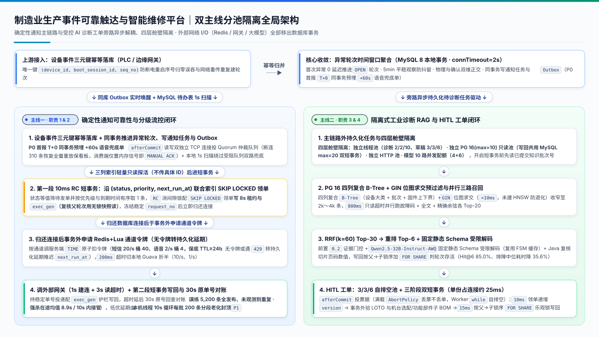
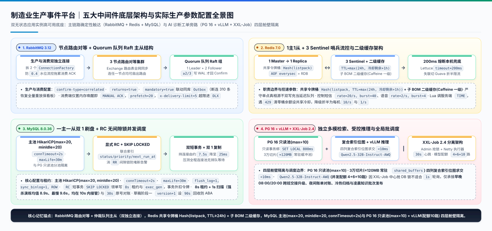
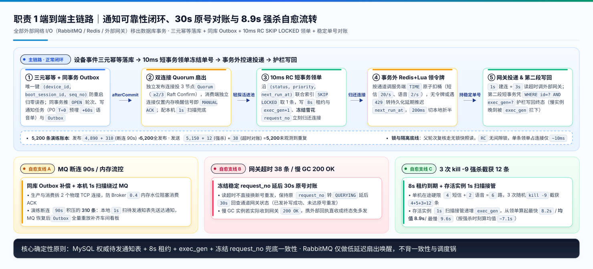
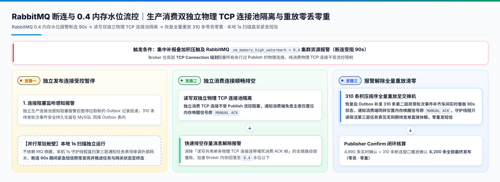
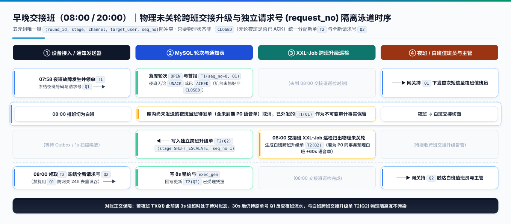
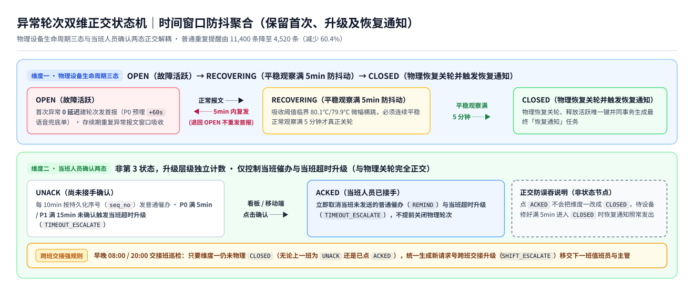
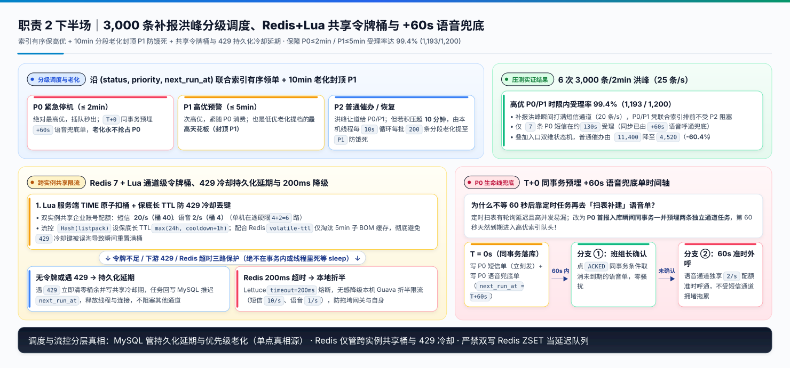
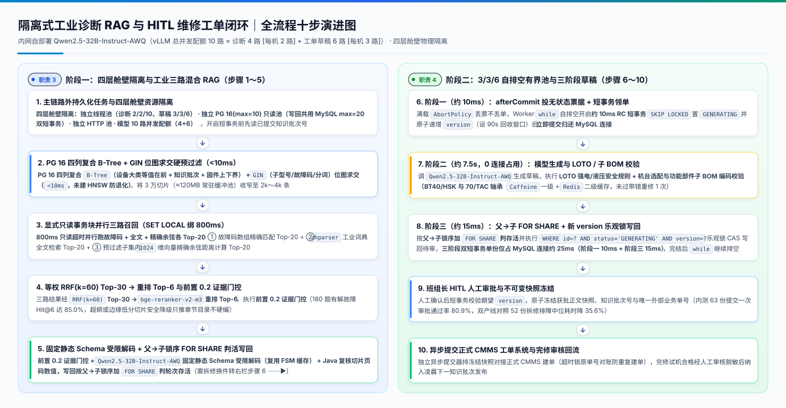
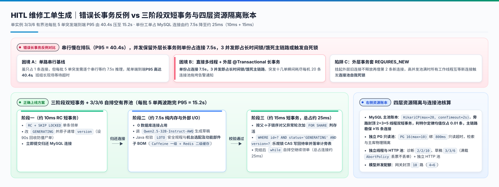

制造业生产事件可靠触达与智能维修平台 · 面试精炼手册
覆盖通知可靠性闭环（Outbox + RC/SKIP LOCKED + 8s 租约 + 30s 原号对账）、告警降噪与分级流控（双维状态机 + Redis Lua 令牌桶）、四层隔离式工业三路 RAG 与 HITL 维修工单（3/3/6 自排空池 + 三阶段双短事务）。每章均含全中间件实况、优劣权衡与折叠自测。
怎么用这份稿：先看各章 X.0 的流程图、例子和权衡表，再脱稿练 X.1 口述与 STAR，最后过 X.3 追问并对照 00_总索引.md（冲刺总本） 抽背数字。口述时先用一两句把结论说清，再按「第一、第二、第三」展开，讲完可以问面试官想先听哪一块。数字只报测过的，没测过的不编，演练口径用「未观测到重复」。
- 章节速跳：
零 项目开场·一 通知可靠性闭环·二 告警降噪与分级流控·三 隔离式工业 RAG 诊断·四 HITL 维修工单生成·五 通用问题与跨角色协作·六 评测与演练账本·七 延伸八股
00零、简历原文与项目介绍
- 项目名称与岗位：制造业生产事件可靠触达与智能维修平台（2025.07 - 2025.10）｜中汇大通科技有限公司 · 后端开发实习生
- 技术栈：Java 17、Spring Boot 3、MySQL 8、Redis、RabbitMQ、XXL-Job、PostgreSQL（pgvector）、RAG、Structured Output
- 项目介绍：平台面向工厂设备告警场景，把设备事件转成异常轮次，经通知提醒、跨班升级和人员确认推进处置，并由模型生成诊断卡和维修草稿，人工审批后对接工单系统，模型不参与告警判定、基础触达及正式工单写入。负责通知可靠性、流控，以及告警分析与工单生成链路的核心实现，并承担压测和故障演练。


- 项目介绍口述（约 1 分半，自然对谈版）：
「这是我实习时参与开发的工厂设备告警与辅助维修平台，整体严格拆成了主线和AI 旁路两条线，模型不碰告警判定、基础触达和正式工单写入。
主线管可靠触达和防刷屏：设备告警转成异常轮次后，我用同库
Outbox、读已提交SKIP LOCKED领单配8 秒租约和Redis + Lua共享令牌桶，解决了断网可恢复、演练未观测到重复以及传感器抖动和两分钟 3,000 条补报洪峰不堵 P0 的问题。旁路管 AI 诊断卡和维修草稿：用独立
PG 16做硬预过滤三路检索生成可溯源诊断卡，再用有界线程池加三阶段双短事务生成草稿交班组长审批。而且和主线在线程池、数据库连接池、HTTP 客户端和模型配额做了四层分池隔离，推理再慢也不会拖垮通知主线。想先听主线的可靠性与流控，还是旁路的工业 RAG 与短事务隔离？」
01一、设计通知可靠性闭环（职责 1）
简历原文设计通知可靠性闭环：针对任务落库与 MQ 发布不一致及重复投递问题，采用 Outbox + 发布确认实现可恢复发布，结合消费确认、稳定请求号对账与业务幂等防重；基于「状态 + 优先级 + 到期时间」联合索引，配合 SKIP LOCKED 领取与租约回收处理中断任务。在 Broker 断连与实例宕机演练中，5,000 余条已受理任务全部最终发布、未观测到重复业务通知，中断任务约 10s 内被接管。



先懂再背1.0 设计推演速懂（先懂再背）
先拆简历原句 & 点破易踩坑：
整条通知链路横跨 MySQL、RabbitMQ、外部短信/语音网关 三个独立故障域，最核心的架构思想只有一条：把数据库通知任务表当作唯一事实源，将「异常轮次 / Outbox 发布 / 通知调度 / 网关回执」拆成四层互不混用的状态，靠「至少一次投递 + 两端幂等 + 稳定请求号对账」兜底。
- 易踩坑预警 1：演练中 RabbitMQ 断连 90 秒恢复补发了
310条Outbox事件，为什么不会重复发短信？ 因为断网期间本机1 秒守护线程直扫第 3 层通知表早把紧急短信发完了。恢复补发的310条第 2 层事件是帮车间看板补状态的，通知消费端收到只置本机唤醒标志即 ack，守护线程探活见无到期单直接休眠。 - 易踩坑预警 2：对外依赖运营商网关按请求号去重，我不会宣称严格 Exactly-once，口径统一为「至少一次投递加两端幂等，演练中未观测到重复」。
一图看懂：一条通知从落盘扇出、领单发送到异常对账的完整闭环
车祸现场推演：每一步为什么被迫这么设计？
- 车祸 1（写库后直接发 MQ 宕机丢单 + RabbitMQ 内存飙高阻塞发布连坐消费 ack）→ 同库
Outbox+ 读写双独立连接工厂- 不加它怎么炸：事务内发 MQ 会拖长事务占连接且回滚撤不回消息。提交后再发 MQ 遇进程崩溃直接丢单。此外 RabbitMQ 内存超过高水位（默认 40%）会阻塞所有发布连接，如果消费端共用同一条 TCP 连接，消费
ack也发不出去，消息越积越死。 - 怎么设计：业务与
Outbox同库提交，提交后快路径异步发 MQ（收 ack 标已发布，nack/超时由补发线程每秒SKIP LOCKED指数退避重试，凌晨XXL-Job清理 7 天前冷单）。发布和消费拆成两个独立连接工厂。不用 Canal 是为了少维护一套 binlog 同步组件。
- 车祸 2（双实例默认 RR 扫表间隙锁互卡 + 领单锁父表与人工确认互殴死锁）→
RC + SKIP LOCKED+ 无锁快照复核父轮次- 不加它怎么炸：
- 默认
REPEATABLE READ下沿非唯一时间索引扫表加锁，会锁住区间间隙（Next-Key Lock），把并发新插入的告警全堵死。 - 人工点确认时是「先锁父轮次 → 再批量取消通知子单」，如果领单事务「先锁通知子单 → 再给父轮次加
FOR SHARE」，两头反向加锁立刻死锁！
- 怎么设计：
- 建三列联合索引
(status, priority, due_time)（等值status在最左筛掉历史完结单，priority在第二列消除Using filesort），在显式READ COMMITTED下FOR UPDATE SKIP LOCKED跳过别人已锁行直接领下一条。 - 领单复核父轮次状态时只做普通无锁快照查询（不加
FOR SHARE，切断死锁边），人工确认取消子单时先查主键再按聚簇主键升序更新。
- 车祸 3（调网关 3s 超时换号重发导致重复轰炸 + 慢 GC 超 8s 租约被接管后醒来冲突）→ 稳定请求号 + 30s 对账 + 慢 GC
200 OK留证收敛- 不加它怎么炸：网关读超时其实根本不知道对方发没发短信，如果开启 HttpClient 自动重试或换个新流水号重发，工人手机就会收到一模一样的多条短信。如果线程卡 GC 超过 8 秒已被另一台机器递增
exec_gen接管，原线程醒来又拿到了200 OK，白等 30 秒对账会拉长恢复时间，甚至被旧代次丢弃凭据。 - 怎么设计：首次领单用雪花算法生成并绑死
request_no全程不变，关闭 HttpClient 自动重试，真实超时单转待对账延后30 秒持原号反查。对慢 GC 超 8 秒醒来的原线程做不对称写回：拿到超时/网络错因exec_gen不匹配更新 0 行安全放弃。若已拿到网关明确200 OK与渠道流水号，则同短事务按唯一request_no幂等落回执表留证并直接收敛主单为已受理。
实况举例（全中间件联动：MySQL + RabbitMQ + Redis + 外部网关 + XXL-Job）
故障演练实况：「1 号车间主轴过温触发 P0 告警，恰逢 RabbitMQ 断网 90 秒，且发短信时网关发生 3 秒读超时。」看五大组件与四层表如何各司其职、不重发短信：
| 时刻 / 发生事件 | MySQL 四层状态 & RabbitMQ | Redis & 外部网关 / XXL-Job 协同 | 核心保障效果 |
|---|---|---|---|
| T+0s：告警入库 | MySQL 单本地事务原子写：活跃轮次 + 五元组唯一短信单 + 预埋 +60s 语音单 + Outbox(待发布)。此时 RabbitMQ 断网，Outbox 留补发线程 | 未触及外部网关 | MQ 断网不阻塞告警落盘 |
| T+1s：断网期守护线程领单 | 本机 1s 守护线程在 MySQL RC + SKIP LOCKED 领短信单（无锁快照复核父轮次），写 8s 租约、exec_gen=1、绑死 REQ100 | 事务外先过 Redis Lua 扣令牌，再调 外部网关（关 HTTP 自动重试）遇 3s 读超时 → 主单转 待对账 延后 30s | 断网期间告警短信照发不误，不换号重发 |
| T+34s：原号反查收敛 | 守护线程在 MySQL 扫出到期对账单 | 持同一 REQ100 反查 外部网关 流水 → 返回已受理 → 写 MySQL 回执表收敛为 已受理 | 未观测到重复业务通知。凌晨由 XXL-Job 清理 7 天前冷单 |
| T+90s：MQ 恢复补发 Outbox | 补发线程经 RabbitMQ 独立发布连接补发 310 条 Outbox 给看板补状态。通知消费端经独立消费连接收到仅置唤醒标志即 ack | 守护线程探活 MySQL 见无到期单直接休眠 | 读写双连接防内存高水位连坐，补发 310 条不再发一遍短信！ |
为什么选它：核心方案优劣与代价权衡表
| 决策点 & 对比方案 | 其他方案的优点（何时该选） | 缺点与底层原因（为什么会踩坑） | 我的最终方案与愿意付的代价 |
|---|---|---|---|
| 写库与发 MQ 一致 直发 / Canal / RocketMQ 事务 vs Outbox | 直发 MQ 代码极简。Canal 听 binlog 零业务侵入（适合多下游大中台）。RocketMQ 事务消息 内置回查 | 写后直发崩溃丢单、事务内发拖长连接且回滚撤不回。Canal 需多运维一套组件并管 binlog 位点。RocketMQ 不符公司 RabbitMQ 栈 | 选同库 Outbox + 发布确认 + 读写双连接：愿付业务代码同事务写 Outbox 与凌晨定时清理 7 天冷单开销，换取零外部组件且断网 90s 全部补发 |
| MQ 选型与队列 Kafka / 经典镜像队列 vs RabbitMQ 仲裁队列 | Kafka 吞吐极高且支持按位点回放（适合日志与 NoteWeave 流水线）。镜像队列老版本支持消息优先级 | Kafka 不擅长低延迟一对多逐条确认与原生死信路由。经典镜像队列已被官方弃用且脑裂风险高于 Raft | 选 RabbitMQ 3.12 仲裁队列：愿付3.12 不支持消息优先级（需把优先级收归 DB）的限制，换取 Raft 强高可用与毫秒级扇出 |
| 多实例领单与接管 Redis 锁 / 取模分片 / XXL-Job vs RC + SKIP LOCKED | Redis 锁实现简单。取模分片零锁竞争。XXL-Job 统一控制台可视化 | Redis 锁扫表退化单机串行且挂机等过期。取模分片单机宕机无人接管。XXL-Job 扫租约依赖外部调度中心，中心/MQ 挂了就停摆 | 选 MySQL RC + SKIP LOCKED + 8s 租约 + 本机 1s 守护：愿付数据库每机每秒一次 <0.3ms 只读探活成本，换取无锁等待并行与平均 8.9s 自治接管 |
早晚八点跨班升级@Scheduled / Quartz / 延迟消息 vs XXL-Job | @Scheduled 零配置。延迟消息无需扫表适合单条独立倒计时 | @Scheduled 多实例重复跑缺分片审计。Quartz 重数据库锁表精度差。延迟消息在车间临时改班次时无法批量修改或取消已入队消息 | 选 XXL-Job 分片广播批量扫表：愿付维护调度中心与分片幂等逻辑成本，换取按班次随时调规则与清晰对账每次升级条数 |
- 演练断开 RabbitMQ 90 秒，恢复后补发了 310 条
Outbox事件，为什么不会把短信再发一遍？ - 领单短事务为什么要切
READ COMMITTED+SKIP LOCKED？为什么复核父轮次绝对不能加FOR SHARE？ - 演练
5,200条的两本账分别是怎么对平的（发布4,890 + 310，发送5,150 + 12 + 38）？中断接管平均8.9 秒是从哪一刻算到哪一刻？
点击核对核心采分点（先自己脱稿讲一遍再点开）
- 四层状态隔离防重发：异常轮次、Outbox 发布、通知调度、网关回执四层完全拆开。断网 90s 期间本机 1s 守护线程直扫第 3 层通知表早已把紧急短信发完，恢复后补发的 310 条第 2 层 Outbox 事件用来帮车间看板补状态，通知消费端收到只置内存唤醒标志即 ack，守护线程探活见无到期单便直接休眠。
- 消间隙锁与断反向死锁边：RR 下非唯一索引加锁读会加 Next-Key Lock 锁住间隙阻塞新告警插入，切
RC + SKIP LOCKED只锁命中行且跳过别人已锁行。人工确认是「先锁父轮次 → 再按主键升序取消子单」，领单已先锁通知子单，若对父轮次加FOR SHARE会形成反向死锁环，改在RC下走普通无锁快照查询断开环路。 - 两本账与
8.9s起止点：发布账4,890 实时确认 + 310 断连补发 = 5,200，发送账5,150 常规受理 + 12 强杀接管(4+5+3) + 38 读超时对账 = 5,200。8.9s（最快 8.2s、最慢 9.6s）是从原实例领单写8s租约起算到存活实例重新领走写新租约（若从kill -9时刻起算平均约7.1s）。
1.1 约 1 分钟速答与约 2 分钟 STAR
- 约 1 分钟速答（先抛结论 + 拆三步 + 抛钩子）：
「通知链路横跨 MySQL、RabbitMQ 和外部网关三个故障域，我把数据库通知表做成唯一事实源，靠至少一次投递加两端幂等把整条链路闭环：
① 写库和发 MQ 用同库
Outbox加发布确认保扇出。② 双实例领单切读已提交配
SKIP LOCKED、沿三列联合索引写8 秒租约和稳定请求号。③ 调网关超时或强杀接管，延后
30 秒持原号反查流水再决定重投。演练5,200条全部最终发布、未观测到重复，中断任务平均8.9 秒（最慢9.6 秒，都在 10 秒内）被接管。这块下面可以细聊 Outbox 断网补发为什么不重发短信，或者 领单怎么避免和人工确认死锁，想先听哪个？」
- 面试官主问：「先讲讲简历第一条，通知可靠性闭环具体是怎么设计的？」（约 2 分钟 STAR 口述）：
- 背景（S）：车间告警要同步发短信语音并推大屏，横跨数据库、RabbitMQ 和运营商网关。早期写完库直发 MQ 宕机就丢单，调网关
3 秒超时换号重发会重复轰炸工人，双实例在默认可重复读下扫表还常被间隙锁互卡。 - 任务（T）：双实例下以至少一次投递加两端幂等打通全链路，消除扫表锁等待，并保证实例宕机后
10 秒内接管在途单。 - 做法（A）：
- ① 原子落盘保扇出：把轮次、五元组唯一通知单（
P0首报同事务预埋+60s语音单）和Outbox放同一本地事务提交，异步发 RabbitMQ 开启发布确认，并拆成发布和消费两个独立连接防内存高水位连坐。 - ② 无锁等待领单与断死锁：本机 1 秒守护线程先无锁探活，再开读已提交 10ms 短事务沿三列索引配
SKIP LOCKED领单，用普通无锁快照复核父轮次（防与人工确认反向死锁），写入8 秒租约、递增exec_gen与稳定请求号，填满本机6路槽位还连接，事务外扣令牌调网关。 - ③ 稳定单号 30 秒对账：真实超时或强杀接管单延后
30 秒持原号回查再重投。慢 GC 超8 秒醒来若已拿到网关200 OK凭据则直接幂等落回执收敛。
- 结果（R）：在断网
90 秒和 3 次kill -9强杀演练中，5,200 条（简历记 5,000 余条）全部最终发布且未观测到重复通知，12 条在途强杀中断单平均8.9 秒（最慢9.6 秒，10s内）被接管。
核心机制1.2 核心技术点
- 1. 四张核心表（数据模型）
- 怎么用：异常轮次表存厂区、设备、故障类型和两个维度的状态。通知任务表存五元组唯一键（异常轮次、阶段类型、通道、接收人、持久化序号）、状态（待发送、发送中、待对账、待人工复核、已受理、已送达、已取消、已失败）、优先级、到期时间、租约到期时间、执行代次
exec_gen、稳定请求号request_no和重试次数。Outbox表存事件类型、轮次版本号、负载、发布状态、重试次数和下次重试时间。网关回执表按稳定请求号记录受理和送达状态。 - 为什么这么设计：每张表只管一层状态，处置、事件发布、发送调度、外部回执互不混用，所以断网补发事件时不会误触发重发短信。
- 2. 同库
Outbox与补发线程- 怎么用：业务事务里同时写
Outbox。事务提交后通过 Spring 的事务同步回调立即异步发布一次，走快路径。补发线程每秒扫一次发布状态为待发布、下次重试时间已到的记录，每批最多 100 条，用FOR UPDATE SKIP LOCKED领取，多实例互不重复。发布失败按 1、2、4、8 秒指数退避，最多重试 10 次后标记为失败并告警。已发布的记录由XXL-Job每天凌晨清理 7 天前的数据，防止表膨胀。 - 为什么这么设计：快路径保证正常情况下事件几乎没有延迟就能发出，补发线程只处理异常，两者都依赖同一张表，宕机后重启也能接着发。
- 对比：Canal 订阅 binlog 发消息不侵入业务代码，但要额外部署和运维一套组件，还要处理 binlog 位点。RocketMQ 事务消息依赖 RocketMQ，我们用的是 RabbitMQ。
- 3. RabbitMQ 拓扑与可靠投递
- 怎么用：轮次事件发到一个
topic类型交换机，路由键是事件类型，通知队列和看板队列各自绑定，实现一对多扇出。队列是 3 节点仲裁队列。生产端开异步发布确认，每条消息的关联数据是Outbox记录 ID，收到 ack 就把这条记录标为已发布，收到 nack 或超时就留给补发线程。同时开mandatory，路由不到队列的消息通过回退回调记录告警。消费端手动确认，prefetch设为 20，处理失败重新投递，仲裁队列的x-delivery-limit设为 5，超过就进死信队列人工排查。 - 参数怎么定：
prefetch太大，消费者本地会堆积大量未确认消息，实例宕机时这些消息要重新投递。太小又会让消费者等网络往返。通知消费者收到消息只置本机内存唤醒标志即手动确认（不查主库），单条处理不到 1 毫秒，20 能让消费者保持吞吐又不囤积未确认消息。 - 连接设计：发布和消费用两个独立的连接工厂。RabbitMQ 内存超过高水位（默认 40%）会阻塞所有发布连接，如果消费也在同一个连接上，ack 发不出去，消息就越积越多。
- 对比：经典镜像队列已经被官方弃用，仲裁队列基于 Raft，数据安全性更好，但我们用的 3.12 版本不支持消息优先级（RabbitMQ 4.0 起才支持两级优先级），也不支持非持久化消息，这也是我没用 MQ 优先级的原因之一。
- 4. 联合索引、无锁快照复核与聚簇主键升序取消
- 怎么用：通知任务表建「状态、优先级、到期时间」三列联合索引。守护线程先做一次只读探活，条件是状态为待发送且到期时间不晚于当前时间，取一条就返回，不加锁也不返回任务 ID。有结果才开领单短事务，在显式
READ COMMITTED下按同样条件与优先级、到期时间排序取一条加FOR UPDATE SKIP LOCKED锁住通知子表行。若该任务需复核父异常轮次状态（如普通催办、当班超时升级、P0语音兜底），在READ COMMITTED下只用普通无锁快照查询读取父轮次最新已提交状态，严禁对父轮次加FOR SHARE，消除「先锁子表再锁父表」与人工确认「先锁父表再改子表」之间的反向死锁边（仅在人工确认事务已更新锁住父表但正等该子表行锁尚未提交的毫秒交错窗口，最多多发一条边界提醒或语音兜底）。反过来，人工确认批量取消待发子任务时，先查出待取消主键列表并按聚簇主键升序执行更新，与分段老化提档锁序保持一致。一轮里循环领单直至填满本机 6 路在途槽位（短信 4 路、语音 2 路）或探活无到期单为止。 - 为什么探活：空闲期绝大多数时候没有到期任务，每秒空开写事务会白白占连接、产生事务日志。
- 对比：领单也可以用一条
UPDATE ... ORDER BY ... LIMIT 1直接改，但多实例同时执行时会互相等锁，SKIP LOCKED能让每个实例直接跳过别人锁住的行。
- 5. 租约与守护线程
- 怎么用：每台实例一个单线程的
ScheduledExecutorService做调度，固定延迟 1 秒执行，依次做探活循环领单、租约回收和对账到期检查。调度线程只管领单，领到的任务投给短信 4 路、语音 2 路两个发送线程池执行，自己不等网关响应，所以一轮就能把本机 6 个在途槽位填满。租约回收的条件是状态为发送中且租约到期时间早于当前时间，命中的任务递增exec_gen并转待对账。停机时先停止领新单，等手上的发送完成再退出。 - 在途槽位怎么定：按通道配额反推，短信配额每秒 20 条、网关正常响应约 200 毫秒，一路在途每秒能跑 5 条，4 路就能跑满配额，语音每秒 2 次配 2 路同理。双实例合计短信 8 路、语音 4 路，理论吞吐高于配额，真正限速的是令牌桶，不是领单速度。槽位同时限制了单实例宕机时的在途任务数，接管范围可控。
- 为什么用固定延迟：固定频率模式下，如果某一轮执行超过 1 秒，下一轮会紧接着跑，可能堆积。固定延迟是上一轮结束后再等 1 秒，更平稳。
- 对比：租约回收也可以交给
XXL-Job，但调度中心本身是一个依赖，最低秒级调度还要经过网络，本机守护线程更直接，而且 MQ 和调度中心都挂了也能跑。
- 6. 稳定请求号、慢 GC
200 OK留证收敛与 30 秒对账- 怎么用：请求号用雪花算法生成，在首次领单事务里写入，之后不再改变。若发送线程遭遇慢 GC 停顿超过 8 秒租约已被存活实例递增
exec_gen接管，原线程醒来后做不对称写回处理：若拿到的是超时或网络异常，因exec_gen失配更新 0 行直接安全放弃。若原线程已拿到网关明确返回的200 OK与渠道流水号，先在同短事务内按唯一request_no幂等写入网关回执表留证，并允许按同一request_no将当前处于「发送中」或「待对账」的主任务直接收敛为「已受理」，免去盲等 30 秒反查。真正超时结果未知的任务转待对账，延后 30 秒调网关查询接口按请求号查流水，已受理补终态，明确未收到才持原请求号重投（超 3 次仍未知则 P0 同号重投并告警，P1 以下转人工确认）。 - 为什么延后 30 秒：运营商网关受理后内部是异步落库的，立刻查可能查不到，造成误判重发。
- 7. HikariCP 数据库连接池与主旁路定量账本
- 怎么用：每台实例 MySQL 主库连接池
maximumPoolSize20、minimumIdle20，获取超时connectionTimeout与事务超时均设 2 秒，开启leakDetectionThreshold2 秒泄漏检测，maxLifetime30 分钟短于服务端wait_timeout。 - 主旁路共用定量账本：虽然诊断与草稿写回 MySQL 与主链路共用这 20 条连接池（检索走独立 PG 只读池 10 条），但上游旁路线程池硬封顶每机
2（诊断）+ 3（草稿）= 5个线程，且拆成毫秒级双短事务配 2 秒超时。草稿约0.01条，叠加诊断约0.02条，峰值同刻写回最多借 5 条，主链路稳保至少 15 条。 - 延伸：Druid 功能多、自带监控，HikariCP 基于
ConcurrentBag更轻、性能更好，Spring Boot 默认用 HikariCP。
- 8. 调短信网关的 HTTP 客户端
- 怎么用：用 Apache HttpClient 连接池，单路由最大连接数 20，连接超时 1 秒，读超时 3 秒。关闭 HTTP 客户端自带的自动重试。
- 为什么关闭自动重试：客户端自动重试不知道上一次网关有没有受理，会造成重复发送。重试统一交给对账流程，由业务决定。
- 9. 五元组业务唯一键（业务幂等防重）
- 怎么用：通知任务表在「异常轮次 ID、阶段类型、通道、接收人、持久化序号」五个字段上建唯一索引。阶段类型区分首次、催办、升级、恢复。持久化序号是同一阶段内的第几次，在轮次上用条件更新递增后再生成任务。生成任务时直接插入，唯一键冲突就当作已生成。
- 为什么要五个字段：少了阶段类型，早八点跨班升级和常规催办会被当成同一条。少了通道和接收人，短信和语音、班组长和值班员会互相覆盖。少了持久化序号，同一阶段的多次催办只能生成一条。
- 10. 故障演练怎么设计的
- 观测指标、三类故障注入方式和两本账怎么对平，统一见 6.2。
点击展开：本章可靠性与数据库底层原理速查（RabbitMQ Quorum Raft / Publisher Confirm & Return / MySQL RC + SKIP LOCKED / 雪花算法 64-bit / Outbox 本地消息表）
- RabbitMQ
Quorum Queue（仲裁队列）与 Raft 多数派落盘：- 经典镜像队列在网络分区恢复时极易发生脑裂丢消息。3.12+ 推荐的
Quorum Queue基于 Raft 共识协议（1 Leader + 2 Follower），消息必须经至少2/3多数派节点写 WAL 日志落盘才向生产端回Publisher Confirm，Leader 宕机由多数派选新主无缝承接。 Publisher ConfirmvsReturn：Confirm 确认消息已安全到达 Exchange（并经 Quorum 落盘）。mandatory=true + Return捕获「到达了 Exchange 但找不到任何匹配 Queue 路由」的静默丢消息事故。
- MySQL
READ COMMITTED+SELECT ... FOR UPDATE SKIP LOCKED原理：- InnoDB 默认
REPEATABLE READ下范围扫描非唯一索引会加 Next-Key Lock（临键锁 = 记录锁 + 间隙锁） 防幻读，会导致新告警插入区间被阻塞。切READ COMMITTED后取消间隙锁仅锁命中记录，配合 MySQL 8 的SKIP LOCKED遇到被其他实例锁住的待发单直接跳过、立刻锁定下一条未锁行，实现双实例无锁等待并发抢单。
- 雪花算法（Snowflake）64-bit 稳定请求号结构：
1 bit 符号位(0) + 41 bit 毫秒时间戳(约 69 年) + 10 bit 机器号(最多 1,024 节点) + 12 bit 毫秒内自增序号(单机每毫秒 4,096 个)——趋势递增利于 InnoDB B+ 树顺序插入减少页分裂，且跨实例全局唯一不依赖数据库自增锁。小幅时钟回拨短暂自旋等待，大幅回拨直接告警报错。
Outbox（本地消息表）模式本质：- 放弃高开销分布式事务（XA/2PC），将「业务表状态变更」与「待发送事件记录」塞进同一个本地 MySQL 事务同成同败。事务提交后由异步线程投递 MQ 并在收到 Confirm 后标已发，消除「库写了但 MQ 没发出去」的双写悬空窗口。
高频追问1.3 高频追问
- 追问 0 ★★★（完整实现与崩溃恢复）：「能完整讲一下一条通知从产生到送达的过程吗？中间任何一步宕机会怎样？」
「整条链路围绕异常轮次、通知任务、同库
Outbox和网关回执四张表转，数据库通知表是唯一事实源。① 原子入库与扇出：设备事件幂等落库推进异常轮次，需通知时在同一本地事务写入通知任务（若为
P0首报，同事务一并预埋一张60 秒后到期的独立待发送语音兜底单，收到短信送达回执或人工点击确认即取消）和Outbox事件，提交后异步发 RabbitMQ 扇出给看板与通知模块。② 无锁探活与循环领单：每台实例的
1 秒守护线程先沿三列联合索引只读探活，有到期单再开10ms读已提交短事务配SKIP LOCKED锁一条子表行，用普通无锁快照查询复核父轮次状态后置为发送中、递增执行代次、记8 秒租约与稳定请求号并提交，填满本机短信4路、语音2路槽位后在事务外扣令牌调网关。③ 全断点可重入恢复：本地提交前宕机整体回滚等设备重报，提交后未发 MQ 靠
Outbox补发线程重投，领单后未调网关宕机等8 秒租约到期收回，调网关超时或写回前宕机统一转待对账延后30 秒持原请求号回查流水（若慢 GC 原线程醒来已拿到网关明确200 OK凭据，则幂等写入回执表并按请求号直接收敛主单为已受理，免等30 秒）。」 - 追问 1 ★★（三级触发取舍）：「既然有 RabbitMQ，为什么还要本机
1 秒守护线程和XXL-Job？」「三类触发的时间特征不一样。实时事件要毫秒级一对多扇出给通知和车间看板，适合用 MQ。到期提醒、漏发补投和中断租约回收要按时间点精确触发，而且 MQ 断网期间也不能停，所以由每台实例的守护线程直接扫库。早晚八点跨班升级、夜间核销和历史冷单归档是按班次边界的批量动作，量大但不急，交给带分片和执行记录的
XXL-Job更合适。」- → 触发八股（跨班升级为什么不用延迟消息）：跨班升级在早八点要把上一班所有未修好的轮次一起升级，如果用延迟消息就得给每条轮次单独算延迟时长，一旦车间调整班次表，已经发进队列的延迟消息无法批量修改取消，定时批量扫表既好改规则又方便核对每次处理条数。
- 追问 2 ★★★（双写一致与断网补发）：「为什么不在业务代码里写完库直接发 MQ？演练断开 RabbitMQ
90 秒恢复补发了310条，会不会重复发短信？」「我对比过四种做法并拆开了四层状态。
① 双写选型权衡：在事务里发 MQ 会因网络慢拖长事务占住连接且回滚撤不回消息，提交后再发遇崩溃会丢单，RabbitMQ 原生事务吞吐极低也保不了与数据库原子性，上
Canal解析日志要多维护一套组件，因此选同库Outbox原子落盘加异步确认重试，多实例补发乱序靠事件携带轮次版本号让看板做高水位条件更新。② 四层状态隔离防重发：第一层异常轮次处置状态、第二层
Outbox事件发布状态、第三层通知任务发送调度状态、第四层网关受理与送达回执各自独立。演练在补报洪峰尾段断网90 秒，期间本机守护线程直扫第三层任务已把紧急短信发完，恢复后补发的310条第二层事件用来帮车间看板补齐状态，通知消费端只置内存唤醒标志即确认，守护线程探活见第三层无到期单便直接休眠，不会再发一遍。」- → 触发八股（本地消息表 vs RocketMQ 事务消息、RabbitMQ 三环节防丢与内存流控）：本地消息表靠同库事务落盘加异步确认重试，而 RocketMQ 事务消息靠先投半消息、本地提交后再确认并由 Broker 回查兜底。RabbitMQ 防丢靠生产端开启发布确认（配
mandatory与回退回调防路由丢失）、Broker 端持久化交换机与基于 Raft 多副本的仲裁队列、消费端手动ack（配prefetch限流与有限次重试转死信）。另外 RabbitMQ 内存超水位会阻塞发布连接，若读写共用单连接会连消费端ack一起阻塞，所以拆成了生产和消费两个独立连接工厂。
- 追问 3 ★★★（超时对账、慢 GC 留证与幂等边界）：「调短信网关报了读超时或遇慢 GC 租约过期，怎么做到不重复？能算严格的 Exactly-once 吗？」
「核心是首次领单生成的稳定请求号全程不变，并区分三种返回情况。
① 未调网关：如事务外扣令牌未过，直接退回待发送推迟到期时间，无需对账。
② 慢 GC 租约过期后的不对称处理：若原线程卡顿超
8 秒已被接管，醒来时若只是超时异常则因执行代次不匹配更新0行安全放弃，若已拿到网关明确返回的200 OK与渠道流水号，则同短事务按唯一请求号幂等写入回执表留证，并凭该请求号将发送中或待对账的主任务直接收敛为已受理，免去盲等30 秒。③ 真正超时未知：转待对账延后
30 秒（避开运营商异步落库延迟）持原请求号回查流水，确认未收到才同号重投。整条链路是至少一次投递加两端幂等，我不宣称严格恰好一次，因为去重依赖外部网关契约。」- → 触发八股（消费端幂等三种常见做法）：一是数据库唯一键约束（如通知任务表按异常轮次、阶段类型、持久化序号等建五元组唯一键，跨班升级与常规催办并发跑也不重复生单），二是状态机条件更新（仅处于前置状态才允许流转），三是独立去重表记录消息 ID，而调外部接口无法靠本地库约束，就靠稳定请求号交对方幂等。
- 追问 4 ★★★（多实例领单、锁序与索引设计）：「两台实例扫表怎么防重复和死锁？联合索引列顺序怎么定？为什么选 RabbitMQ 不选 Kafka？」
「我从领单互斥、父子锁序和中间件特性三层把关。
①
RC + SKIP LOCKED无锁等待领单：纯 MQ 覆盖不了到期提醒，分布式锁锁扫描退化串行，按实例取模宕机无人接管。我在读已提交短事务里沿状态、优先级、到期时间联合索引配SKIP LOCKED每次领1条，遇到被锁行直接跳过去锁下一条。② 消除父子死锁边：领单已先锁通知子表行，复核父轮次时在读已提交下只做普通无锁快照查询而不加共享锁，人工确认批量取消待发子单则先查主键再按聚簇主键升序更新，与分段老化锁序一致。
③ 租约与选型：
8 秒租约覆盖3 秒读超时加余量，配1 秒扫描实现平均8.9 秒接管。选 RabbitMQ 看重低延迟扇出、逐条确认与死信，个人项目资料流水线则用可按位点重放的 Kafka。」- → 触发八股（联合索引最左前缀、
EXPLAIN与RC vs RR间隙锁）：状态是等值条件放第一列先筛掉九成九历史完结单，若把范围条件「到期时间」放第二列，后面的「优先级」就无法利用索引排序，EXPLAIN的Extra会出现Using filesort，把优先级放第二列后，待发送子集内天然按优先级、到期时间有序，EXPLAIN的type为ref、Extra为Using index condition（无Using filesort），顺扫首条到期行即可返回。RR下对非唯一索引范围加锁读会加临键锁（记录锁加间隙锁）防幻读，导致新告警插入该间隙被阻塞，切为RC（配ROW格式binlog保主从一致）后只锁命中记录不锁间隙。
- 追问 5 ★★（真实网关）：「演练用的是模拟网关，真实运营商未必支持按你的请求号去重和查询，怎么办？受理和送达分别指什么？」
「受理是网关同步返回成功，送达要等运营商异步回执，受手机信号影响，我们单独监控回执到达率而不混入系统可靠性指标。对接真实异构通道有三点处理：
① 借用客户流水号：主流短信商支持传客户流水号回查，直接把稳定请求号映射过去。
② 延后
30 秒最多查3次：避开运营商落账延迟防误判重发。③ 无反查通道分级容错：像企微或钉钉群机器人无单号反查，
P0/P1采取宁重勿漏并在卡片带轮次号原地折叠更新，P2/P3采取宁缓勿重交下一轮10 分钟催办自然兜底。」 - 完整版深挖导航：慢 GC 收敛细节、6 个排障故事与后端八股详见 02_可靠通知、降噪流控与场景追问.md（§4～§6、§8、§10.1～10.7、§14）。
02二、设计告警降噪与分级流控机制（职责 2）
简历原文设计告警降噪与分级流控机制：针对设备抖动、重复催办及集中补报造成的重复提醒与突发流量，按异常轮次实施时间窗口聚合（保留首次、升级及恢复通知），基于 Redis + Lua 实现跨实例共享的通道级令牌桶限流；MQ 与扫描入口统一按优先级 + 老化调度，结合持久化延期分批消化积压。场景回放中，普通重复提醒量减少约 60%，P0/P1 时限内通道受理率 99% 以上。


先懂再背2.0 设计推演速懂（先懂再背）
先拆简历原句 & 点破易踩坑：
这条职责左右开弓解决两类车间真实风暴：左边（入口降噪）解决传感器阈值十秒横跳狂刷屏，用物理观测 × 人员确认双维正交状态机把普通重复催办压掉 60.4%（11,400 → 4,520），且首次、升级、恢复三条关键线一条不丢。右边（出口分级流控）解决网关重连两分钟涌入 3,000 条低优补报把 P0 堵死，用数据库优先级 + 分段老化 + Redis Lua 共享令牌桶 + 持久化延期把 1,200 条 P0/P1 时限内受理率稳在 99.4%（1,193/1,200）。
- 易踩坑预警：那
7条未在 2 分钟内拿到短信受理的P0单（撞上哨兵切主 +429冷却 + 30s 对账，约130s才短信受理），现场之所以没有漏报延误，是因为T+0开启P0轮次时已在同事务独立预埋了一张+60s语音兜底单，第60 秒独立语音通道准时外呼穿透提醒！
一图看懂（入口降噪）：双维正交状态机与 P0 完整时间线
一图看懂（出口流控）：3,000 条补报洪峰下的优先级调度、老化与共享令牌桶
车祸现场推演：每一步为什么被迫这么设计？
- 车祸 1（点确认直接关轮次导致反复首报 + 修好不发恢复）→ 物理观测与人员确认双维正交
- 不加它怎么炸：维修工在手机点“已确认”时正在拆机床，传感器还在报越界。如果点确认就把轮次关掉，10 秒后下一条越界点位进来会被当成新故障狂发首报，修好后也发不出恢复通知。如果把两维硬揉成一个单一状态机，状态组合翻倍极易写漏转移条件。
- 怎么设计：拆分物理观测与人员确认两正交维度——点确认只停当班普通催办与当班升级，不关轮。早晚八点未物理恢复照常跨班升级。只有传感器平稳满
5 分钟才由守护线程关轮发恢复（有意付出“恢复通知晚 5 分钟”的代价，换取抖动期零误报。同一工段 5 秒超 15 条同源 P0 另做工段级汇总合并）。
- 车祸 2（补报洪峰里 P3 抢光令牌堵死 P0 + MQ 拿不到令牌 nack 空转）→ 收回数据库优先级领单 + 分段老化 + 持久化延期
- 不加它怎么炸：令牌桶只管“每秒放多少”，不管“谁先走”。如果 MQ 消费者直抢令牌，几千条 P3 补报会把配额吃干。RabbitMQ 3.12 仲裁队列不支持消息优先级（且已被
prefetch预取的消息无法重排）。拿不到令牌发nack回队列还会死循环空转耗 CPU。 - 怎么设计：取消 MQ 直发，收回数据库按
P0 → P3领单。拿不到令牌就按 Lua 返回的等待毫秒数加随机抖动推迟due_time写回数据库（持久化延期，零内存占用、零空转、防惊群）。再配每 10 秒守护线程给等待满 10 分钟的低优单分段老化提档、封顶P1，既防低优饿死又不抢P0跑道。
- 车祸 3（
429冷却期内流控键 TTL 过期消失，冷却结束瞬间满桶 40 条打爆网关引发二次429）→ 清余量 + 保底长 TTL +volatile-ttl协同- 不加它怎么炸：网关返回
429要求冷却几分钟时，如果流控键本来只设了短过期时间，冷却期间因为本机跳过请求没去刷新 Redis，流控键过期被清掉了。冷却一结束，新请求进来发现键不存在，按冷启动直接初始化满桶40个突发令牌瞬间轰出去，立刻再吃一次429！ - 怎么设计：遇
429写共享冷却截止时间并同步清空桶内剩余令牌（冷却结束从 0 平滑爬坡）。每次写入将流控键 TTL 刷为max(24 小时, 冷却剩余时长 + 1 小时)，配合 Redisvolatile-ttl策略优先淘汰仅5 分钟TTL 的旁路 BOM 缓存，避免流控键被误淘汰。哨兵切主失联超200ms自动降级本地 Guava 各折半放行。
实况举例（全中间件联动：MySQL + Redis(Lua/volatile-ttl) + 本地 Guava + RabbitMQ + XXL-Job）
车间真实时间线：「07:50 主轴振动越界触发 P0，恰逢网关重连涌入 3,000 条 P3 补报并触发下游 429 与哨兵切主。期间传感器每 10 秒抖动、维修工点击确认且跨越 08:00 交接班。」
| 时刻 / 现场动作 | MySQL 双维状态与优先级队列 | Redis / 本地 Guava / XXL-Job 协同 | 核心保障效果 |
|---|---|---|---|
07:50 首报 + 洪峰砸来 | MySQL 生成列唯一索引保唯一活跃轮次（越界中 × 未确认）。取消 RabbitMQ 直发，回 MySQL 按 P0→P3 领单并同事务预埋 07:51 语音单。P3 无令牌改回待发送做持久化延期 | 事务外调 Redis Lua 共享令牌桶（短信 20/s 桶 40、语音 2/s 桶 4） | 就算短信撞 429 拖到 130s，07:51（第 60s）语音照样准时呼通 |
07:52 遇 429 + 哨兵切主 | 拿不到令牌的 P3 单按返回等待 ms 加抖动落回 MySQL 延期 | Redis 写冷却截止 + 清空桶余量 + 刷保底 TTL max(24h, cooldown+1h)（volatile-ttl 仅淘 5min BOM 缓存）。切主失联 >200ms 自动切双机 本地 Guava 折半（10/s、1/s） | 防冷却期流控键过期重置满桶 40 条引发二次 429，哨兵切换不断流 |
07:54 维修工点击确认 | MySQL 仅推人员维为 已确认，主键升序取消当班待发催办单。物理维仍留 越界中 不关轮！ | 无额外 Redis/MQ 动作 | 传感器再抖动不会被当新故障狂发首报，普通催办压降 60.4% |
08:00 跨班 / 08:15 修好 | 08:10~08:15 平稳满 5min → MySQL 守护线程关轮发恢复通知。每 10s 分段老化把等待满 10min 的 P3 提档封顶 P1 | 08:00 由 XXL-Job 分片扫未物理关轮单触发跨班升级给接班员 | 首次、升级、恢复关键线 0 丢失，P0/P1 按时受理 99.4% |
为什么选它：核心方案优劣与代价权衡表
| 决策点 & 对比方案 | 其他方案的优点（何时该选） | 缺点与底层原因（为什么会踩坑） | 我的最终方案与愿意付的代价 |
|---|---|---|---|
| 活跃轮次去重 仅 Redis 分布式锁 vs MySQL 生成列唯一键 | Redis 分布式锁内存态响应极快、写库前可提前拦流 | Redis 锁在主从异步切换或长 GC 锁过期时会失效，无法作为最终强一致防线 | 选 MySQL 生成列（活跃拼接、关闭为 NULL）唯一索引：愿付多 1 列虚拟生成列与二级唯一索引维护成本，换取并发下绝对唯一的活跃轮次 |
| 分级调度与延期 MQ 优先级 / TTL+DLX / 延迟插件 / Redis ZSET vs MySQL 联合索引 | MQ 延迟队列不扫数据库。Redis ZSET 纯内存排序吞吐极高（适合允许微丢单的非核心任务） | RabbitMQ 3.12 仲裁队列不支持优先级且 prefetch 预取后不能重排。TTL+DLX 受 FIFO 队头长延时阻塞短延时。延迟插件受单节点存储瓶颈。Redis ZSET 切主丢单且缺事务一致 | 选收回 MySQL 联合索引领单 + 每 10min 老化封顶 P1 + 持久化延期：愿付延期多写一次短事务与守护线程扫描成本，换取 0 丢单、0 空转与 P0/P1 受理 99.4% |
| 跨实例限流算法 固定窗 / 滑动窗 / 漏桶 / 纯本地 vs Redis Lua 令牌桶 | 固定窗口实现最简。滑动窗口平滑无突刺。漏桶输出绝对平稳。纯本地 Guava 零网络耗时 | 固定窗口交界处双倍流量突刺。滑动窗口存全量时间戳占内存。漏桶无法吸收合理突发。纯本地多实例无法共享总额与全局 429 冷却 | 选 Redis Hash + Lua 共享令牌桶 + 200ms 降级本地 Guava 折半：愿付每次发送多一次 <1ms Redis Lua RTT 与切主极小窗口多放 ≤40 条误差，换取突发可控与故障不断流 |
- 为什么不能在维修工点击“确认”时直接关闭异常轮次？拆成物理与确认两维后，付出了什么有意的代价？
- 为什么不用 RabbitMQ 优先级队列或
TTL + 死信交换机做分级延期，而要把调度权收归数据库？低优单分段老化为什么要封顶P1？ - 收到网关
429时为什么要“清空桶内余量”且把 Redis 流控键的过期时间设成max(24h, cooldown+1h)？
点击核对核心采分点（先自己脱稿讲一遍再点开）
- 双维解耦与有意代价：点确认时机床还在拆修、传感器仍报越界，直接关轮会导致 10 秒后新点位被当新故障狂发首报，且修好后发不出恢复通知。拆成物理与确认两维后，点确认只停当班催办与当班升级，跨班未修好照常升级。有意代价是恢复通知比真实恢复晚 5 分钟，换取抖动期零反复误报。
- 收回数据库调度 + 封顶
P1：RabbitMQ 3.12 仲裁队列不支持优先级且预取后无法重排，TTL+DLX受 FIFO 队头长延时阻塞短延时，拿不到令牌nack还空转。收回 DB 按优先级领单配持久化延期不占内存也不空转，老化封顶P1是为了既防低优饿死、又不让积压老单抢走新发P0停机告警的通道。 429清余量 + 保底长 TTL：清空余量让冷却结束后从0平滑爬坡。设保底 TTLmax(24h, cooldown+1h)配合volatile-ttl只淘汰 5 分钟 BOM 缓存，是防止长冷却期内因本机跳过未刷新流控键导致键过期消失、冷却一结束按冷启动瞬间吐出40个满桶令牌引发二次429。
2.1 约 1 分钟速答与约 2 分钟 STAR
- 约 1 分钟速答（先抛结论 + 拆三步 + 抛钩子）：
「车间当时最怕两场风暴：一是传感器阈值十秒横跳狂刷屏，二是网关重连两分钟涌入
3,000条低优补报把P0停机告警堵死。① 入口我按物理观测和人员确认两套正交状态机聚合抖动，只压普通催办、保住首次/升级/恢复一条不少。
② 中间取消 MQ 直发，收回数据库按
P0到P3领单，每10 分钟给低优老化提档封顶P1。③ 出口走
Redis + Lua共享令牌桶配持久化延期，并给P0首报同事务预埋+60s语音兜底。回放普通重复提醒降了约60%，高优时限内受理率超99%。这块想先聊双维状态机为什么点确认不关轮，还是 Redis 令牌桶怎么防
429二次突刺和切主降级？」 - 面试官主问：「第二条写告警降噪和分级流控，这块具体是怎么设计的？」（约 2 分钟 STAR 口述）：
- 背景（S）：车间里一类干扰是传感器在阈值边缘十秒横跳刷屏，另一类是网络重连两分钟涌入约
3,000条低优补报，瞬间打爆通道配额吃429，还把要命的P0停机告警堵在队尾。 - 任务（T）：入口把同次故障抖动收敛住且一条关键通知不丢，出口做跨实例共享限速和高优优先、低优防饿死的调度。
- 做法（A）：
- ① 双维正交降噪：按厂区、设备、故障用生成列唯一索引保唯一活跃轮次，拆开物理观测和人员确认两维——首次直发，未确认催办
10 分钟合并，点确认停当班催办但不关轮，跨班未修照常升级，平稳满5 分钟关轮发恢复。 - ② 收回调度与有界老化：取消 MQ 直发，回 MySQL 沿联合索引按
P0→P3领单。本机守护线程每10 秒给等满10 分钟的低优单分段老化提一档、封顶P1不抢P0。 - ③ 共享令牌桶与持久化延期：事务外调
Redis + Lua扣令牌（遇429清余量并刷max(24h, cooldown+1h)保底长 TTL，失联超200ms切本地 Guava 折半）。没令牌就加随机抖动推迟到期时间落库延期。
- 结果（R）：两周回放普通重复提醒从
11,400降到4,520条（减少约 60%），首次、升级、恢复条数前后一致。叠加洪峰、哨兵切换和429，1,200条 P0/P1 时限内受理率99.4%（1,193/1,200），7 条延时短信的第60s语音兜底也全部准时呼通。
核心机制2.2 核心技术点
- 1. 唯一活跃异常轮次
- 怎么用：同一台设备的同一种故障，在任一时刻只能有一个活跃轮次。MySQL 不支持带条件的部分唯一索引，我加了一个生成列，轮次活跃时取「厂区、设备、故障类型」的组合值，关闭后为 NULL，在这一列上建唯一索引。MySQL 唯一索引允许多个 NULL，所以历史关闭的轮次不冲突，活跃轮次只能有一个。事件到达时先尝试插入新轮次，唯一键冲突就说明已有活跃轮次，转为更新它。
- 对比：用 Redis 分布式锁按设备加锁也能保证唯一，但锁过期、主从切换都可能失效，数据库唯一约束是最后一道硬保证。
- 2. 双维状态机与时间窗口
- 怎么用：轮次上分别记录物理状态（越界中、平稳观察中、已恢复）和确认状态（未确认、已确认，升级层级在轮次上独立记录，不占用确认维度状态）。物理维度收到正常点位时记下首次平稳时间，再次越界就清空，守护线程扫描平稳时间超过 5 分钟的轮次关轮并生成恢复通知。普通催办在轮次上记最近一次催办时间，生成新催办的条件是距上次超过 10 分钟且未确认。所有状态转移都写成条件更新，带上期望的前置状态。
- 为什么由守护线程判定平稳：设备恢复后可能不再上报任何事件，只靠事件触发判定会一直等不到关轮。
- 3. 优先级与分段老化
- 怎么用：通知任务带 P0 到 P3 的优先级。对等待满 10 分钟且低于 P1 的低优任务，由应用内本机守护线程每 10 秒循环开启
READ COMMITTED短事务，先沿独立的「状态 + 下次老化时间」索引SKIP LOCKED取出最多 200 条主键，再按聚簇主键升序批量提一档并推进下次老化时间（数秒内即可无锁冲突地分批排空数千条满期补报单）。 - 为什么封顶 P1：如果低优任务能老化到 P0，积压严重时新发生的停机告警又会和它们抢通道。
- 对比：RabbitMQ 优先级队列只在队列内排序，被消费者预取到本地的消息不能重排，而且我们用的 3.12 仲裁队列不支持优先级（4.0 起才支持两级）。
- 4. Redis + Lua 令牌桶与保底长 TTL
- 怎么用：每个通道一个
Hash键，存剩余令牌数、上次补桶时间（毫秒）和冷却截止时间。Lua 脚本通过EVALSHA调用，先调TIME拿服务端时间（微回拨钳位为 0），处于冷却期直接返回剩余等待毫秒数，否则按时间差乘最新传入速率补令牌并以最新传入桶容量做自然截断（min(burst, ...)，线上热调配额靠传新参即时生效），够一个就扣减。短信速率每秒 20、容量 40，语音每秒 2、容量 4。每次写入将键保底过期时间刷新为max(24 小时, 冷却截止剩余时长 + 1 小时)，配合 Redisvolatile-ttl内存策略优先淘汰仅 5 分钟 TTL 的旁路BOM二级缓存，从机制上避免429长冷却期内因本机内存跳过未调 Redis 刷新 TTL 导致流控键过期、冷却结束瞬间按冷启动重置满桶40个突发令牌。 - 降级：Redis 客户端命令超时 200 毫秒，超时或失联就切本地 Guava
RateLimiter，每台按总额度折半（短信每秒 10、语音每秒 1）。网关返回429时按Retry-After写入共享冷却截止时间（只延不缩）并清空桶内剩余令牌。
- 5. 无令牌时的持久化延期（配
429冷却前置探活防 DB 写放大）- 怎么用：拿不到令牌时，用 Lua 返回的等待毫秒数加随机微抖动作为推迟量，短事务把任务改回待发送、推后到期时间。同时在进入 MySQL 领单短事务之前，Worker 会先读一次极轻的本机通道冷却标记（收到网关
429退避冷却期间直接跳过该通道领单，连 SQL 都不发），避免3,000条P3洪峰遇冷却期反复“领单 → 扣令牌失败 → 写回延期”造成 2 倍无效 DB 写放大。 - 为什么加抖动：大量任务同时被推到同一个时刻，下一秒又会一起来抢令牌，形成惊群。
- 6. Redis 客户端（Lettuce）
- 怎么用：Spring Boot 默认的 Lettuce 基于 Netty，单个连接线程安全，多个线程共享一条连接多路复用发送短命令，不需要连接池，命令超时设 200 毫秒。Jedis 连接非线程安全必须配连接池。
- 7. P0 汇总合并与统计边界
- 怎么用：同一工段 5 秒内超过 15 条同源 P0（比如配电房跳闸导致整段停机），不再逐条外发，合并成一条工段级汇总通知加一次语音外呼，用 Redis 计数键加 5 秒过期做固定窗口统计。两周历史事件流回放未触发该 15 条合并阈值，因此回放统计里首次通知条数与改造前一致。
- 8. 升级通知与 P0 完整时间线
- 两种升级：当班超时升级（P0 首报后 5 分钟、P1 15 分钟无人确认，由守护线程扫库给班组长发升级单，当班确认即取消）和跨班升级（早晚八点交接班由
XXL-Job把未物理关轮的轮次升级给接班员和车间主管，无论上一班是否确认）。 - P0 完整时间线：
T+0开启 P0 轮次的本地事务里，同时插入立即执行的短信单和一张60 秒后到期的独立待发送语音兜底单。60 秒内收到运营商短信送达回执或在看板/移动端点击确认即条件更新取消语音单，满 60 秒未收到送达回执且未确认则由独立语音通道准时外呼（即使短信通道撞上主从切换与429冷却拖到130 秒才完成短信对账受理，第60 秒语音兜底依然准时呼通）。T+5 分钟无人确认触发当班超时升级，跨早晚八点未关轮触发跨班升级，设备平稳满5 分钟关轮发恢复通知。
- 9. 60% 和 99% 怎么统计的
- 回放设计、两个数的分子分母和为什么只统计受理，统一见 6.3。
点击展开：本章限流算法、淘汰策略与降噪口径原理速查（令牌桶 vs 漏桶 vs 滑动窗口 / Redis volatile-ttl vs volatile-lfu / Guava RateLimiter / 降噪与受理率公式）
- 四种经典限流算法本质对比：
- 固定窗口计数器：每个整秒/整分钟清零计数，实现最简，但在窗口交界处（如
0.9s和1.1s各放满额）存在 2 倍瞬时突刺。 - 滑动日志 / 滑动窗口：按时间戳细粒度滑窗统计，流量平滑但 Redis
ZSET需存每条请求记录，高流量占内存大。 - 漏桶（Leaky Bucket）：请求先入桶、按严格恒定速率流出，削峰最平，但不允许合法短时突发（突发告警会被硬拖延迟）。
- 令牌桶（Token Bucket，本项目选用）：按固定速率
rate往容量burst的桶里匀速放令牌（如短信20/s、桶 40），来请求扣 1 枚令牌——既保证长期均速不超过配额，又允许桶容量以内的短时突发秒过。Lua 仅存 3 个标量字段（余量、上次补桶时间、冷却截止时间），空间与耗时均为O(1)。
- Redis 内存淘汰策略
volatile-ttlvsvolatile-lfu：volatile-ttl：仅在设置了过期时间的键中，优先淘汰剩余存活时间（TTL）最短的键。本项目给流控键设保底长 TTLmax(24h, cooldown+1h)，给旁路 BOM 二级缓存设5minTTL，内存吃紧时精准先清 BOM 缓存，保住429冷却键不丢。volatile-lfu（NoteWeave 采用）：在带 TTL 键中优先淘汰近期访问频次最低的冷键，适合保护热点 Wiki 页。
- 本机降级
Guava RateLimiter：采用令牌桶平滑突发（SmoothBursty）实现，单机内存按总配额折半（短信10/s、语音1/s），Redis 失联 200ms 立即接管保护上游网关与自身。 - 核心指标计算公式：
- 普通重复提醒压降率：
(11,400 - 4,520) / 11,400 = 60.35% ≈ 60%（严格保持首次、升级、恢复通知一条不减）。 - P0/P1 时限内通道受理率：
时限内拿到网关同步 200 OK 的高优条数 / 全部 P0+P1 应发条数 = 1,193 / 1,200 = 99.42%（仅 7 条 P0 短信因撞上切主+429+30s 对账约 130s 受理，且第 60s 语音兜底已准时呼通）。
高频追问2.3 高频追问
- 追问 1 ★★★（双维状态机与代价）：「为什么要把物理状态和人员确认拆成两个维度？点击确认直接关轮次不行吗？这样设计有什么代价？」
「降噪的前提是首次、升级、恢复这三类关键通知一条都不能少，只压缩存续期重复的普通催办。在看板或移动端点击确认时机床往往还在拆修、传感器仍在报越界，如果直接关轮次，十秒后下一条越界数据进来会被当成新故障再发一遍首报，修好后也发不出恢复通知，而合成单一状态机又会让状态组合翻倍易写错条件。拆开并配合状态条件更新后，确认只停当班普通催办与当班超时升级（批量取消待发子单时先查主键再按聚簇主键升序更新防死锁）、跨班未修好照常升级、平稳满
5 分钟准时发恢复。付出的有意代价是恢复通知比真实恢复时刻晚5 分钟，用来换取阈值抖动期不反复发恢复与告警。」 - 追问 2 ★★★（优先级调度与持久化延期）：「有了令牌桶为什么还要回数据库按优先级加老化调度？为什么不用 RabbitMQ 优先级队列？」
「令牌桶只管每秒放多少，不管谁先走。
① 收回调度权防低优抢跑：如果 MQ 消费者拿消息直接抢令牌，排前面的几千条
P3补报会把令牌抢光，而 RabbitMQ 优先级队列只在队列内排序，已被消费者prefetch预取到本地的消息无法重排，我们用的3.12仲裁队列也不支持消息优先级，拿不到令牌发nack回队列还会空转耗 CPU。② 持久化延期加有界老化（含冷却前置跳过省 DB 写）：收回数据库按三步出口执行并推迟到期时间加抖动做持久化延期，不占内存也不空转（且遇到
429冷却窗时在进领单短事务前先读本机通道冷却标记直接跳过领单，把冷却期“领单→扣令牌失败→写回延期”的无效 DB 写放大降到接近 0）。每10 分钟分段老化提档封顶P1，既防低优单饿死，又把通道配额优先留给新发生的P0。」- → 触发八股（延迟消息实现对比与消息积压处理）：RabbitMQ 原生无延迟队列，用
TTL + 死信交换机会受队列先进先出限制导致前序长延时消息阻塞后序短延时消息，装延迟插件则受单节点存储限制，本项目延期需按优先级动态重排故落数据库最合适（RocketMQ 4.x 支持固定延迟级别、5.x 支持任意时间，Kafka 无原生延迟队列）。遇消息积压先区分突发还是持续：补报洪峰属突发积压，靠优先级保紧急、低优延期消化，持续积压则看瓶颈，此处瓶颈在外部通道配额，盲目加消费者无效，关键是把配额优先分给高优单。
- 追问 3 ★★★（共享令牌桶、保底 TTL 与哨兵切换）：「跨实例令牌桶用
Redis + Lua怎么实现的？怎么防429冷却期键过期突发？哨兵主从切换怎么办？」「我从原子算桶、冷却防突刺和故障降级三层打磨。
① 服务端时钟原子算桶：用单
Hash存剩余令牌、上次补桶时间和共享冷却截止时刻，Lua 内调服务端TIME（微回拨钳位为0）按时间差补桶并以最新传入桶容量自然截断，空间和耗时都是常数级。② 清空余量加保底长过期防二次
429：收到429写入共享冷却截止时间时同步清空桶内余量，让冷却结束后从0平滑爬坡，同时每次写入将键过期时间设为24 小时与『冷却剩余时长加1 小时』的较大值，配合volatile-ttl仅淘汰5 分钟的BOM缓存，避免长冷却期内因本机跳过未刷过期时间导致键消失重置满桶40条。③ 哨兵切换折半降级：主从异步复制切主最坏净多放不超过一桶
40条，客户端设200ms超时，失联期自动降级为双机本地Guava各按总额度一半（短信10/s、语音1/s）放行。」- → 触发八股（四种限流算法、Lua 原子性与哨兵复制取舍）：固定窗口有交界处双倍流量突刺，滑动窗口平滑但占内存，漏桶恒定流出不支持突发，令牌桶兼顾桶内突发与长期均速。Lua 原子性源于 Redis 单线程执行命令期间不穿插其他请求（脚本须短小防阻塞，集群下需同槽而单
Hash天然满足）。哨兵多数派判下线选新主时未同步写入会丢，虽可配min-replicas-to-write限制但从库挂会导致主库不可写，限流对微小误差不敏感，容忍加折半降级更稳妥。
- 完整版深挖导航：双维状态机、每 10s 分段老化锁序、保底长 TTL 与哨兵切换分析详见 02_可靠通知、降噪流控与场景追问.md（§5.2、§7、§10.8～10.9、§14.4～14.8）。
03三、建设隔离式告警分析链路（职责 3）
简历原文建设隔离式告警分析链路：针对基础告警缺少现场处置依据与诊断响应波动问题，在主链路外以持久化任务驱动分析并与通知链路分池隔离；按设备型号、版本与片段级适用范围预过滤，经故障编码、全文与向量三路召回、RRF 融合与重排，结合 Structured Output 与证据校验生成可追溯诊断卡。离线评估中，Hit@6 约 85%、引用支持率约 95%；灰度对照中，现场人员定位故障耗时中位数下降约 35%。

先懂再背3.0 设计推演速懂（先懂再背）
先拆简历原句 & 点破易踩坑：
这条旁路同时守住两条底线：① 不拖累告警通知主线（异步持久化任务 + 四层物理舱壁隔离）。② 不把改款机型的扭矩/压力参数张冠李戴，也不瞎编排查步骤（PG 16 硬预过滤 + 故障码/全文/向量三路互补重排 + 0.2 证据门控 + 静态 Schema + 代码核对页码数值）。
- 易踩坑预警 1（必考对账）：
Hit@6命中153/180（85.0%），为什么放行生成的诊断卡有156张？记牢 2×2 四格表：153命中 =148过门控放行 +5仅擦边命中附注未过0.2被拦。27未命中 =19准确拦截 +8道漏细分切片但同故障基础 SOP 正文块过线放行 →148 + 8 = 156张卡（另20道超纲题全部拦下）。 - 易踩坑预警 2：离线评测严格做了时间防穿越——初版随机切分把事后完修记录漏进库里导致
Hit@6虚高到91.7% (165/180)，按告警触发时刻可见批次重切后剔除 12 道泄漏题才得出真实的85.0% (153/180)。
一图看懂：四层舱壁隔离 + 工业三路 RAG 诊断全流程
车祸现场推演：每一步为什么被迫这么设计？
- 车祸 1（内网 32B 模型推理抖动拖垮通知主线 + 4KB 向量扫穿 MySQL 热缓冲池）→ 四层物理舱壁隔离 + 独立 PG 16
- 不加它怎么炸：模型推理动辄十几秒且容易超时，如果和通知共用线程、HTTP 或数据库连接池，模型一慢通知全堵。如果把 3 万条
4KB向量塞进 MySQL，高频并发扫描会在 InnoDB 5:3 LRU 链表停留超 1 秒晋升热区，把通知核心索引页全挤出去。 - 怎么设计：把持久化任务、线程池、PG 只读连接池、HTTP 池（配 Resilience4j 熔断）及 10 路模型配额（诊断 4、草稿 6）全拆开。写回 MySQL 虽然共用每机 20 条连接池，但上游旁路硬封顶
2 诊断 + 3 草稿 = 5个线程且全拆成10~15ms短事务，主链路稳保至少 15 条连接。
- 车祸 2（先全局向量召回再过滤把新改款机型挤空 +
E2041混成E2014）→ 章节树限定词下沉 + 硬预过滤 + 三路互补- 不加它怎么炸：同系列老型号手册多，先做全局向量 Top-20 再过滤型号常被滤得一条不剩。而稠密向量能懂口语症状（“主轴高速异响温升快”），却极易搞混只差一位换序的报错码
E2041和E2014。 - 怎么设计：离线构建章节树把小节/表注里的子型号和固件版本限定词逐层下沉到切片。检索时先用
B-Tree与GIN位图求交硬筛剩两三千条（3 万切片阶段不建 HNSW，全库120MB向量采用非压缩STORAGE EXTERNAL常驻shared_buffers，精确计算不到10ms），再走「故障码精确 + 工业词典全文 + 向量」三路RRF加重排。
- 车祸 3（大模型瞎编页码扭矩 + 推理几秒内故障已关闭仍把过期诊断卡推上大屏）→ 三道防编造关 + 写回父轮次
FOR SHARE- 不加它怎么炸：
Structured Output只保证 JSON 格式合法，管不住模型把35 N·m瞎改写成53 N·m或编不存在的页码。而且推理需要几秒，期间如果现场已修好关单，子任务自己根本不知道。 - 怎么设计：
0.2证据门控前置拒答 → 全局固定静态 Schema（不把动态切片编号塞进枚举，常驻命中 vLLM 状态机编译缓存）→ Java 代码硬验切片 ID、原书页码和关键数值 → 写回短事务按「先父后子」对父轮次加FOR SHARE当前读确认未关轮才落库。
实况举例（全中间件联动：MySQL + 独立 PostgreSQL 16 + 应用信号量 + Resilience4j + 内网 vLLM 32B）
现场排障案例（机制示意）：「机台 DX-560B（固件 v2.3）触发报错码 E2041，维修工口语补充“主轴高速转起来异响温升快”。」看四层隔离下各组件如何协同产出可溯源诊断卡（下表页码/扭矩/重排分为流程示意值）：
| 链路环节 | 中间件协同（MySQL / PG 16 / vLLM / Resilience4j） | 避开的经典坑（连带热门八股） |
|---|---|---|
| 1. 任务派发与 PG 16 硬预过滤 | 告警入库时在 MySQL 同事务写持久化诊断任务 → 独立诊断池（2/2/10）领单 → 经独立 PG 16 只读池（10 连接，SET LOCAL 800ms）跑 B-Tree(大类/批次/固件) ∩ GIN(子型号) 位图求交（几十 KB << 4MB work_mem）：30,000 → 2,400 条 | 防老型号占满向量 Top-20。拆独立 PG 16 防 120MB 向量扫穿 MySQL InnoDB 5:3 LRU 热区。两库靠只增不减知识批次号松耦合无分布式事务 |
| 2. PG 16 三路互补召回 | 故障码路锁 E2041（不混 E2014）∥ zhparser 工业词典全文路抓“主轴轴承” ∥ pgvector 精确余弦路（120MB 常驻 shared_buffers <10ms）抓口语症状 → RRF(60) 30 条 → bge-reranker-v2-m3 Top-6（如示意最高分 0.86 ≥ 0.2 过门控） | 3 万条不建 HNSW 反而免去过滤图遍历退化。20 道超纲题全部在 0.2 门控前拦截不调模型 |
| 3. vLLM 生成与 MySQL 判活写回 | 过每机 2 许可信号量 + 独立 HTTP 池（Resilience4j 熔断）调内网 vLLM 32B（开全局固定静态 Schema 命中 FSM 缓存）→ Java 硬核页码（如 P.142）与扭矩（如 35 N·m）未被篡改 → 进 MySQL 短事务（10~15ms）先对父轮次加 FOR SHARE 判活再写诊断卡 | 主库连接池稳保主线 ≥15 条。FOR SHARE 当前读防止推理几秒内故障已关轮还把过期卡推上屏 |
2×2 四格对账速记（153 Hit@6 怎么对上 156 放行卡）：180 道有解题中，153 命中 = 148 过门控放行 + 5 仅擦边附注被拦。27 未命中 = 19 准确拦截 + 8 道虽漏细分切片但同故障基础 SOP 正文过线放行 → 放行 148 + 8 = 156 张卡（引用支持 371/390 = 95.1%）。
为什么选它：核心方案优劣与代价权衡表
| 决策点 & 对比方案 | 其他方案的优点（何时该选） | 缺点与底层原因（为什么会踩坑） | 我的最终方案与愿意付的代价 |
|---|---|---|---|
| 工业手册检索库 主库 MySQL / ES / Milvus vs 独立 PG 16（不建 HNSW） | 主库 MySQL 少一套库。ES / Milvus 适合百万级以上高并发检索（NoteWeave 用 ES） | 放主库 MySQL 会让 4KB 向量扫穿 InnoDB 5:3 LRU 挤走通知热索引。新搭 ES/Milvus 在 3 万条规模下徒增一套集群运维。建 HNSW 在强预过滤下反而易图遍历退化 | 选公司既有独立 PG 16 + 120MB 常驻内存精确扫：愿付未来涨到几十万切片时需补开 HNSW 迭代过滤的演进前提，换取不引入新组件、精确距离且 <10ms |
| 召回与受限解码 先向量再过滤 / 动态枚举 Schema vs 硬预过滤三路 + 固定静态 Schema | 先向量再过滤写起来简单。动态枚举 Schema 能把候选 ID 直接写进语法硬锁死 | 先向量再过滤老机型文档多直接把新改款挤出 Top-20。动态改 Schema 会让 vLLM 每轮重新编译有限状态机 FSM，拖垮推理延迟 | 选 B-Tree ∩ GIN 硬过滤三路 RRF + 全局固定静态 Schema + Java 后验：愿付生成后多写一段 Java 确定性校验代码，换取常驻命中 vLLM FSM 缓存且引用支持 95.1% |
| 主旁路隔离方式 共用资源池 / 纯信号量 vs 四层物理拆池 + 熔断 | 共用池配置省事。纯信号量开销极小不切换线程上下文 | 共用池让慢推理瞬间耗尽连接与线程拖垮告警主线。纯信号量不拆线程池慢调用仍会卡死调用线程本身 | 选四层物理拆池 + 应用信号量 + Resilience4j 熔断：愿付额外部署维护多组池配置与监控指标，换取模型挂掉最坏不出诊断卡、通知不受影响 |
- 旁路写回诊断卡和草稿与通知主线共用每机 20 条 MySQL 连接池，怎么定量证明旁路不会把主线拖死？为什么检索不直接放在 MySQL 里？
- 为什么工业场景必须“先
B-Tree ∩ GIN硬预过滤再三路召回”，且 3 万条向量不建 HNSW 反而能< 10ms精确扫完？ - 口述一遍
153道 Hit@6 和156张放行诊断卡是怎么在 2×2 四格表里能逐格对上的，以及4周灰度（20.5 → 13.2分钟）怎么排除人员和设备偏差？
点击核对核心采分点（先自己脱稿讲一遍再点开）
- MySQL 稳保 15 条账本 + 拆 PG：上游旁路线程池每机硬封顶
2 诊断 + 3 草稿 = 5线程且全拆成10~15ms短事务（2s 超时），极端同刻写回最多借 5 条十几毫秒，主线稳保至少 15 条。不放 MySQL 是因为高频并发扫 3 万条4KB向量会在 InnoDB 5:3 LRU 冷区停留超 1s 晋升热区，把通知核心热索引页挤爆。 - 硬过滤 + 120MB 常驻精确扫：老型号手册多，先向量再过滤常把新改款剃空。
B-Tree ∩ GIN位图仅几十 KB（远小于4MB work_mem不退化整页重检）把 3 万条筛剩两三千条。全库向量30,000 × 4KB ≈ 120MB以非压缩STORAGE EXTERNAL常驻 PGshared_buffers纯内存访问，两三千次精确距离不到10ms且无 HNSW 过滤退化。 - 153 vs 156 四格表 & 交叉灰度：
153命中 =148过门控放行 +5擦边附注被拦，27未命中 =19准确拦截 +8道同故障基础 SOP 正文块过线放行 → 合计156张卡（另有 20 道超纲全拦）。4 周灰度用同车间两条同构产线、甲乙两班组按周交叉轮换抵消人机偏差，以扫码接单至提交故障原因两个系统硬时间戳取中位数（62 起20.5min→ 64 起13.2min，定位为方向性实效）。
3.1 约 1 分钟速答与约 2 分钟 STAR
- 约 1 分钟速答（先抛结论 + 拆三步 + 抛钩子）：
「诊断旁路要死守两条底线：不拖累通知主线，不把相邻改款机型的参数搞串。
① 异步持久化任务驱动，把线程池、独立
PG 16只读池、HTTP 池和模型配额做四层物理隔离。② 独立 PG 先用
B-Tree ∩ GIN按机型固件硬预过滤，再跑故障码、工业词典全文、120MB 常驻向量三路RRF与重排。③ 过
0.2门控用全局固定静态 Schema 生成，Java 代码硬验页码数值后判活写回。离线防穿越Hit@6约85%、引用支持约95%，4周交叉灰度定位耗时中位数下降约35%。更想先听四层隔离怎么定量保主库连接池，还是 PG 预过滤三路召回和
153 vs 156评测对账？」 - 面试官主问：「第三条写建设隔离式告警分析链路，具体是怎么跟通知主链路隔离的？预过滤、三路召回和生成诊断卡是怎么做的？」（约 2 分钟 STAR 口述）：
- 背景（S）：过去维修工查一次报警要翻几百页手册。内网自部署的
32B模型总配额只有10路且耗时波动大，放主线必拖垮通知。另外同系改款机床手册长得极像但扭矩压力不同，纯向量一搜就容易张冠李戴。 - 任务（T）：把 AI 诊断和通知主线隔离开，严卡机型版本边界并兼顾精确故障码与现场俗称，产出可回溯页码的诊断卡。
- 做法（A）：
- ① 四层舱壁隔离：做异步持久化任务，独立拆开诊断线程池（每机
2线程）、独立PG 16只读池（10连接）、独立 HTTP 池（带熔断）和模型配额（诊断4、草稿6），MySQL 主池稳保主线至少15条。 - ② 硬预过滤 + 三路互补：只读事务设
SET LOCAL 800ms，B-Tree与GIN位图求交先把 3 万切片筛剩两三千条，并行跑故障码精确、工业词典全文和 120MB 常驻向量各 Top-20，经RRF(60)取 30 重排 Top-6。 - ③ 三道防编造关：低于
0.2或仅命中目录页直接拒答。生成走全局固定静态 Schema 命中 vLLM 缓存。Java 硬验切片编号、页码与压力扭矩数值，短事务对父轮次加FOR SHARE确认未关轮再写回。
- 结果（R）：时间防穿越评测
180道有解题命中153道（Hit@685.0%，20 道超纲全拦），156张放行卡 引用支持率95.1%（371/390）。4周交叉灰度定位耗时中位数从20.5降到13.2分钟（下降约 35%，样本量有限定位为方向性实效）。
核心机制3.2 核心技术点
- 1. 持久化分析任务
- 怎么用：P0、P1 告警生成轮次时，同一事务里写一条诊断任务。普通告警由现场人员在终端按需触发。任务表有状态、执行代次、重试次数和超时时间（单次预算 60 秒、租约 120 秒），诊断线程用
SKIP LOCKED领取并递增执行代次，超时未完成的由守护线程收回重试，最多 2 次。
- 2. 诊断线程池与应用侧并发闸门
- 怎么用：每台实例独立
ThreadPoolExecutor（核心 2、最大 2、队列 10、AbortPolicy、前缀diagnosis-），调用模型前再过应用侧信号量（诊断每台 2 许可、草稿每台 3 许可，最多等 5 秒超时回库延后），在模型网关 10 路总配额内精确切分诊断与草稿，防止 vLLM 全局排队互相挤占。
- 3. PostgreSQL 只读连接池与内存常驻账本
- 怎么用：检索走公司已有的 PostgreSQL 16，独立 HikariCP 只读池
maximumPoolSize10（2 诊断线程 × 3 路并行峰值 6 条留余量），每次在显式只读事务块内执行SET LOCAL statement_timeout = '800ms'（归还连接自动还原）。 - 为什么外部存储扫描仍
< 10ms：1024 维float32向量占 4 KB，采用pgvector默认非压缩STORAGE EXTERNAL免去无效解压开销。全库3 万条向量总计仅30,000 × 4KB ≈ 120MB，整张向量pg_toast表常驻 PGshared_buffers纯内存访问无磁盘随机 I/O，且预过滤命中的两三千条记录位图仅几十 KB，远低于默认4MB work_mem，位图索引扫描全程保持精确行级而不退化为lossy整页重检。
- 4. 预过滤索引与三路互补召回（RRF 去重）
- 预过滤：手册切片表建四列复合
B-Tree索引(device_category 设备大类等值在前, batch_no 知识批次, fw_min 固件下界, fw_max 固件上界)（首列等值先收窄至同大类几千条，后三列做索引页内毫秒级过滤生成位图），对适用子型号数组、关联故障码数组及zhparser工业词典分词向量建GIN倒排索引。3 万切片阶段未建 HNSW 向量索引，故 PG 优化器稳定走BitmapAnd(B-Tree, GIN) → Bitmap Heap Scan → 精确余弦距离 Top-20不退化，把 3 万条收敛到 2,000～4,000 条精确算距离。 - 为什么工业场景必须三路互补而非两路：稠密向量擅长抓「主轴高速转起来异响温升快」这类口语症状语义，但分不清
E2041和E2014这种字符换序报警码，zhparser工业词典全文路擅长抓「光栅尺」「刀臂卡滞」等专有部件章节，故障码数组精确路负责对报警编码与细分工况一锤定音。三路各取前 20，因分数量纲不同采用标准RRF(k=60)按排名融合取前 30 送bge-reranker-v2-m3精排取前 6（RRF公式推导同 NoteWeave），未过0.2门控或仅命中INDEX目录页直接拒答。
- 5. 调模型的 HTTP 客户端、熔断与静态 Structured Output
- 怎么用：独立 HTTP 池（连接超时 1 秒、读超时 30 秒）套 Resilience4j 熔断器（最近 20 次失败率超 50% 熔断 30 秒，半开放放 3 个探测请求）。vLLM 开启全局固定静态
JSON Schema引导解码以常驻命中服务端有限状态机编译缓存，客户端显式拦截长度截断响应。
- 6. 证据校验、写回
FOR SHARE与手册层级下沉- 怎么用：生成后 Java 代码逐条核对引用切片编号在本次前 6、原书页码一致及压力扭矩温度数值未被篡改。写回 MySQL 短事务内按「先父表后子表」顺序先对父轮次加
FOR SHARE确认未关闭，再写诊断卡。离线解析构建章节层级树，把小节与表注里的子型号及固件版本限定词逐层下沉到切片并经工程师复核，记生效时间防离线评测时间穿越（指标拆解见 6.4）。
点击展开：本章工业检索内核与评估指标公式速查（PG B-Tree + GIN 位图求交 BitmapAnd / 为什么不建 HNSW / RRF 公式 / Hit@6 · 引用支持率 · 中位数 vs 均值）
- PostgreSQL
B-Tree + GIN位图求交（BitmapAnd）原理：B-Tree擅长单值等值与范围条件（设备大类 + 知识批次 + 固件上下界），扫描命中的物理行号（TID）压成位图 A。GIN（广义倒排索引）把数组元素（适用子型号、故障码）和分词词条拆成倒排表，扫描命中行号压成位图 B。执行器在内存对位图 A 与 B 做按位与BitmapAnd（几十 KB 远小于work_mem=4MB不退化整页重检），筛剩2,000～4,000条候选后再回表算精确余弦距离。
- 为什么这里故意不建
HNSW向量索引？HNSW是近似近邻图，配合高选择率过滤条件（过滤掉 90% 老型号切片）时图连通性会退化且多占额外堆内存。本项目 3 万条 1024 维向量合计仅约120 MB常驻 PGshared_buffers，先走BitmapAnd缩到 2k～4k 条再精确扫余弦仅< 10ms，0 近似召回损失（未来扩至百万级切片再建 HNSW 并开启pgvector 0.8迭代扫描）。
- 三路融合
RRF公式与重排漏斗：- 公式：
RRF(d) = Σ_{r∈{故障码,全文,向量}} 1 / (60 + rank_r(d))。因故障码精确匹配、全文 BM25/ts_rank 与余弦相似度量纲差异很大，按排名倒数融合免调权，截断 Top-30 送bge-reranker-v2-m3（Cross-Encoder 全注意力精排）取 Top-6，低于0.2门控拒答。
- 三大评估指标公式与统计意义：
Hit@6（前 6 命中率）：前 6 条至少命中 1 条标准核心排查切片的题数 / 全部有解题数 = 153 / 180 = 85.0%（二值命中，防时间穿越前虚高至165/180 = 91.7%）。对比 NoteWeave 的Recall@10（看多条要点找全比例），工业诊断只要核心规程进 Top-6 即可生成正确诊断卡，故看Hit@6。- 引用支持率：
工程师逐条核验有原始手册片段严格支撑的引用句数 / 156 张放行诊断卡总引用句数 = 371 / 390 = 95.1%。 - 为什么灰度排障耗时用中位数（
20.5 → 13.2 min, -35.6%）而非均值？：车间偶发缺备件等跨省空运的极端单（动辄 3～4 小时）会严重拉偏算术均值，中位数（P50）抗极端离群值，更能真实反映常态工单排障提速。
高频追问3.3 高频追问
- 追问 1 ★★★（舱壁隔离与共用边界）：「分池隔离具体防住了什么传导路径？MySQL 主库连接池和 Redis 共用怎么保证不拖累通知？」
「慢调用最先耗尽共享资源池。
① 四层物理拆池：把持久化任务、工作线程池、检索只读连接池（PG
10条独立于 MySQL20条）、HTTP 客户端池和模型信号量配额全拆开后，模型慢或挂最坏只是不出诊断卡，通知照常发。② MySQL 主池稳保
15条定量账本：旁路写回虽与主线共用每机20条 MySQL 连接池，但上游旁路线程池硬封顶每机诊断2加草稿3共5个线程，且全部拆成10～15ms短事务配2 秒超时，极端同刻写回最多占5条连接十余毫秒，主链路稳保至少15条连接。③ Redis 减负：旁路
BOM校验以本地Caffeine一级缓存为主（命中率超98%），Redis 二级缓存设5 分钟过期交volatile-ttl优先回收，不干扰主链路长效令牌桶。」- → 触发八股（隔离、熔断与降级及线程池 vs 信号量隔离）：隔离防故障扩散，熔断则是下游模型连续超时达阈值后暂时断开调用、直接走降级返回「暂无诊断请转人工」，隔段时间放少量探测请求恢复。线程池隔离开销稍大但支持独立排队与超时控制，信号量隔离开销极小但慢调用仍会阻塞调用线程本身。
- 追问 2 ★★★（预过滤、PG 内存账本与三路互补）：「为什么不先向量召回再过滤？3,000 条外部向量扫描为什么能小于
10ms？为什么非要三路召回？」「这三点正好对应工业手册的分布特征与存储账本。
① 先过滤防老型号挤占名额：同系老型号文档多，先全局向量取前
20再过滤常被剃空，先用B-Tree与GIN位图求交（位图仅几十 KB 远小于4MB工作内存，不退化整页重检）筛剩两三千条最稳。②
120MB向量常驻内存免解压：采用pgvector默认外部非压缩存储省掉无效压缩 CPU，全库3 万条4KB向量合计仅约120MB，常驻 PG 共享缓冲池纯内存读取，两三千次计算不到10ms。③ 三路各司其职：向量抓口语症状描述，工业词典全文抓专有部件章节，故障码数组精确区分
E2041与E2014一位之差，三路经RRF融合互补。」- → 触发八股（
B-Tree vs GIN与连接池SET LOCAL）：B-Tree按标量值有序适合等值和范围，GIN拆多值元素建倒排适合数组包含查询，两者位图求交再回表。连接池复用物理连接，会话级超时归还后会残留误杀后续正常 SQL，只读事务内用局部语句超时则在事务结束自动还原。
- 追问 3 ★★（防编造三道关与受限解码）：「
Structured Output只能管格式，怎么保证内容不凭空编造？写回为什么要对父轮次加FOR SHARE？」「分三道关：生成前重排最高分低于
0.2或仅命中目录页直接拒答转人工，生成时用全局固定静态Schema受限解码强制填引用切片编号，生成后由 Java 代码确定性核对切片编号确在本次前6、原书页码一致且正则提取的压力扭矩数值未被篡改。写回短事务按先父表后子表顺序对父异常轮次加共享读锁做当前读，是防止推理那几秒内故障已在父表恢复关单（子任务自身代次感知不到）还把过期卡片推上屏。」- → 触发八股（受限解码状态机缓存原理）：受限解码在每步生成时按
Schema编译出的有限状态机屏蔽非法词表，因状态机编译有开销，保持全局固定静态Schema（不把每次动态变化的候选编号塞进枚举字段）能让vLLM直接复用编译缓存。
- 追问 4 ★★★（153 vs 156 四格账本与灰度可信度）：「Hit@6 命中 153 道，放行的诊断卡却有 156 张，怎么对上的？灰度的 35% 怎么排除人员和产线偏差？」
「两个数字在
180道有解题的四格表里能逐格对上。① 四格交叉对账：
Hit@6命中的153道拆成148道过门控放行加5道仅擦边命中附注未过0.2被拦下，未进前6的27道拆成19道相关性不足准确拦下加8道虽漏细分切片但同故障基础规程正文块过线放行，合计放行148 + 8 = 156张卡、未出卡转人工5 + 19 = 24道（占180道有解题13.3%，其中仅5道属检索已中但仅擦边附注的纯门控误拒，另19道属检索未召回目标切片、门控按相关性不足保守兜底防瞎编，连同20道超纲题全拦共拦44道），且那8张缺细分前提的卡片只输出保守排查项，部分计入371/390未完整支撑的19条待现场核实项。② 交叉轮换加硬节点掐表：
4 周灰度选同车间两条同构产线、甲乙两班组按周交叉轮换抵消人员与设备差异，提取工单系统扫码签到至提交故障原因两个硬时间戳取中位数（对照组62起20.5分钟降至实验组64起13.2分钟），样本量不大故我定位为方向性实效并持续跟踪。」 - 完整版深挖导航：PG 16 内存常驻账本、章节树下沉、三路互补召回与防穿越评估详见 03_工业RAG、HITL维修工单与场景追问.md（§5～§6、§8～§10、§14.5～14.8）。
04四、实现 HITL 维修工单生成链路（职责 4）
简历原文实现 HITL 维修工单生成链路：针对草稿生成耗时长、模型输出需校验与人工审批的问题，基于诊断卡与检索证据生成维修草稿，经 Schema 与业务规则约束后流转人工确认；采用有界线程池并发执行，将流程拆为短事务领取、事务外模型调用、基于版本校验的短事务写回三个阶段。同等负载下，草稿生成端到端 P95 由约 40s 降至约 15s，一次审批通过率约 80%。

先懂再背4.0 设计推演速懂（先懂再背）
先拆简历原句 & 点破易踩坑：
维修工单涉及高危强电/液压拆修和真实备件出库，模型绝对不能直写正式工单（HITL 红线）。整条链路核心解决三大工程问题：
① 用每机 3/3/6 有界线程池并发拉取消除突发排队（压测 P95 从 40.4s 降至 15.2s）。② 用编程式 TransactionTemplate 拆出 10ms 领单 + 事务外推理校验 + 15ms 写回三阶段双短事务，单份仅占 DB 连接约 25ms。③ 用 LOTO 安全红线与选配主轴/部件子 BOM 硬规则把脏活拦在送审前，做到 115 份送审里 93 份（80.9%）班组长一键批准。
- 易踩坑预警：
40.4s → 15.2s不是把单次模型推理变快了！单次生成中位数一直是约7.2s。单机3线程、每批5单压测 40 批（200 份）时，串行第 5 单排队尾延迟到40.4s。开3线程后首波 3 单并行跑完、第 2 波 2 单收尾，所以尾延迟降到15.2s——而如果只开并发不拆短事务（15.8s），就会占满连接池连累通知主线！
一图看懂：有界自排空池 + 三阶段双短事务 + 规则重修 + HITL 审批全流程
车祸现场推演：每一步为什么被迫这么设计？
- 车祸 1（把 7.5s 推理包进
@Transactional占满连接池。或外层@Transactional内层套REQUIRES_NEW引发连接池死锁）→TransactionTemplate三阶段双短事务- 不加它怎么炸：如果整个流程加
@Transactional，每个草稿线程借走一条数据库连接死攥7.5秒。如果企图外层留@Transactional内层加REQUIRES_NEW，外层挂起时原连接依然不释放，突发请求拿光连接池后，每个线程走到内层都要申请第二条连接，全部阻塞互等触发连接池饥饿死锁。同类自调用@Transactional还会绕过代理失效。 - 怎么设计：用编程式
TransactionTemplate精准切开阶段一（10ms领单）和阶段三（15ms写回），显式指定READ COMMITTED与2 秒超时。阶段二（模型生成 + 安全/BOM 校验）全程零数据库连接，输入数据用 Java 17record封装防并发污染。
- 车祸 2（
LinkedBlockingQueue无界堆爆 /CallerRunsPolicy卡死主线程 /AbortPolicy怕丢任务）→3/3/6有界池 + 无状态唤醒自排空- 不加它怎么炸：草稿硬配额是
6路（双机各3路），开再多线程或 Java 21 虚拟线程也只是超出配额在网关排队。用CallerRunsPolicy会让提交方或扫描线程亲自去跑7.5秒慢推理直接卡死。直接用AbortPolicy大家又担心队列满抛异常会丢单。 - 怎么设计：草稿先持久化进 MySQL，投进
3/3/6线程池的只是不带业务 ID 的无状态唤醒信号。工作线程领完跑完一单不退出，靠while循环SKIP LOCKED把库里待办拉空（外加 1 秒守护线程兜底）。队列满了AbortPolicy丢掉的只是冗余唤醒信号，一单都不会丢。
- 车祸 3（超时重派发生 ABA 脏覆盖 + 全厂万条 BOM 塞大 Hash 拖慢 Redis + 整机 BOM 混用选配主轴轴承）→ 全节点升
version+ 子 BOM 多级缓存- 不加它怎么炸：
- 如果只在写回时改版本号，线程 1 卡了 95 秒，第 90 秒超时回收重派给线程 2，线程 1 第 95 秒醒来拿旧版本照样写覆盖（ABA）。
- 初版把全厂上万备件塞进 Redis 单个大
Hash全量拉取阻塞单线程。试运行复盘发现同一款DX-560B机床的整机 BOM 混装了主轴前端70系列轴承和进给丝杠TAC轴承，粗/精产线选配主轴（BT40vsHSK-A63）也不同。
- 怎么设计：每次执行权转移（阶段一领单、
90s超时回收、班组长人工接管编辑、批准提交）一律原子version + 1。大Hash拆小并用UNLINK异步删旧 Key，缓存键细化到「机台选配编码 + 功能部件单元」，本地Caffeine（2,000 项 5min，命中率>98%）为主 + Redis 小 Hash（5min）为辅，变更经Pub/Sub广播失效。
实况举例（全中间件联动：MySQL + vLLM + 本地 Caffeine + Redis(小Hash/PubSub) + 外部 CMMS）
真实车间与压测案例：「车间一批突发提交 5 份维修草稿（含一台选配 HSK-A63 高速电主轴的 DX-560B 强电+主轴轴承故障），单机 3/3/6 线程池启动并发处理。」
| 阶段 / 校验点 | 中间件协同（MySQL / vLLM / Caffeine / Redis / CMMS） | 直观效果与八股对照 |
|---|---|---|
阶段一并发领单（40.4s→15.2s） | 3/3/6 池收无状态唤醒信号 → 3 线程第 1 波在 MySQL TransactionTemplate（10ms）SKIP LOCKED 领草稿 1~3 并升 version 后立即还连接，第 2 波自排空拉 4~5 | 消除串行排队尾延迟，单份两段共占 DB 连接仅 25ms（避开 @Transactional + REQUIRES_NEW 连接池死锁） |
| 阶段二推理 + 子 BOM 硬拦截 | 事务外过每机 3 许可信号量调 vLLM 生成初稿（漏写“母线放电”且误配 BT40 轴承）→ Java LOTO 规则 + 本地 Caffeine（一级 >98%）/ Redis 小 Hash（二级 5min，变更经 Pub/Sub 广播失效） 拦下并局部重修 1 次通过 | 解决早期万条备件塞单大 Hash 的 Redis BigKey 阻塞问题，把脏活全挡在送审前 |
| 阶段三写回 + HITL 提单 | MySQL 短事务（15ms）验父轮次与 version 写回待审 → 班组长一键批准同短事务冻结快照与唯一外部单号 → 异步提 CMMS（超时原号反查对账） | 送审 115 份中 93 份（80.9%）一次获批，守住安全红线同时给班组长减负 |
为什么选它：核心方案优劣与代价权衡表
| 决策点 & 对比方案 | 其他方案的优点（何时该选） | 缺点与底层原因（为什么会踩坑） | 我的最终方案与愿意付的代价 |
|---|---|---|---|
| 事务边界拆分 大 @Transactional / REQUIRES_NEW / 悲观锁 vs TransactionTemplate 双短事务 | 声明式 @Transactional 代码最简洁（适合无外部 RPC 的纯 DB 操作）。悲观锁写冲突高时免重试 | 大事务占 DB 连接 7.5s 拖死通知且同类自调用失效。外层 @Transactional + 内层 REQUIRES_NEW 外层连接不释放，突发下争抢第二条连接必触发连接池饥饿死锁。悲观锁等价退回长事务 | 选 TransactionTemplate 拆 10ms 领单 + 15ms 乐观锁写回：愿付手写编程式事务模板与状态机 version 校验代码成本，换取单份占连接仅 25ms 且 0 死锁 |
| 并发池与拒绝策略 无界队列 / CallerRuns / 虚拟线程 vs 3/3/6 池 + Abort 自排空 | 无界队列不拒任务。CallerRuns 适合毫秒级短任务天然背压。虚拟线程 适合高并发无硬配额的 IO 密集场景 | 无界队列堆爆内存且最大线程失效。CallerRuns 卡死上游或扫描线程 7.5s。虚拟线程不符 Java 17，且下游硬限 6 路配额放几十路只会排队互挤 | 选 3/3/6 有界池(AbortPolicy) + 无状态唤醒 + while SKIP LOCKED 自排空：愿付多写一层拉取循环与 1s 守护兜底，换取满池只丢唤醒信号不丢单且 P95 降到 15.2s |
子 BOM 缓存单大 Hash / 直查 DB / 仅 TTL vs Caffeine + Redis 小 Hash + Pub/Sub | 直查 DB 绝对强一致。单大 Hash 一次拉全最省代码。仅 TTL 架构更简 | 全厂万条塞单大 Hash 触发 Redis BigKey 阻塞单线程。全直查 DB 徒增主库压力。仅 TTL 变更后双实例最多滞后 5 分钟 | 选本地 Caffeine(一级 >98%) + Redis 小 Hash(二级 5min) + Pub/Sub 失效：愿付审批改 BOM 极罕见广播丢失下最多 5 分钟兜底窗口，换取毫秒校验与 0 阻塞主线程 |
- 为什么外层留
@Transactional、内层套REQUIRES_NEW解决不了长事务，反而可能触发连接池饥饿死锁？ - 线程池设为
3/3/6且拒绝策略用AbortPolicy，为什么队列满了抛异常绝对不会丢草稿单？为什么不用CallerRunsPolicy或虚拟线程？ - 为什么阶段一领单和 90 秒超时回收时都要把
version + 1，而不是只到阶段三写回时才加？
点击核对核心采分点（先自己脱稿讲一遍再点开）
REQUIRES_NEW连接池饥饿死锁：外层事务挂起时，它借走的那条数据库连接在 ~7.5s推理期依然不释放。一旦突发请求把连接池外层连接拿光，每个线程走到内层REQUIRES_NEW再向同一个池子申请第二条连接时，全部互相阻塞死等直至超时报错。3/3/6+AbortPolicy不丢单：每机 3 线程对齐下游 6 路配额除以双实例。草稿已先持久化落库，投进池子的只是不带 ID 的无状态唤醒信号，工作线程while循环SKIP LOCKED拉空待办（配 1s 守护兜底），满池抛异常丢的只是多余唤醒信号。不用CallerRunsPolicy防卡死上游 7.5s，不用虚拟线程一因 Java 17、二因下游硬配额 6 路放多只会排队互挤。- 全执行权转移升
version防 ABA：若领单不改版本，线程 1 卡 95s，第 90s 超时重置被线程 2 领走，第 95s 线程 1 拿原版本号写回照样匹配成功覆盖新结果。领单、超时回收、人工接管编辑、批准全原子递增version挡死 ABA。
4.1 约 1 分钟速答与约 2 分钟 STAR
- 约 1 分钟速答（先抛结论 + 拆三步 + 抛钩子）：
「工单涉及高危拆机和真实领料，模型不能直写正式工单。我主要解了突发排队慢、长事务占爆连接池、以及怎么让班组长省心一键过审三件事：
① 对齐 6 路草稿配额设每机
3/3/6有界池并发拉取，配无状态唤醒和while SKIP LOCKED自排空，单实例压测P95从40.4s压到15.2s。② 用
TransactionTemplate切出 10ms 领单、事务外推理校验、15ms 乐观锁写回三阶段，单份仅占 DB 连接约25ms。③ 送审前硬验 LOTO 安全红线与选配部件子
BOM（局部重修 1 次），线上115份送审93份（约80%）一次通过。这块更想听三阶段短事务和
REQUIRES_NEW死锁坑，还是3/3/6线程池和 BOM 大 Key 排障？」 - 面试官主问：「第四条写实现 HITL 维修工单生成链路，有界线程池、三阶段短事务和业务规则约束具体是怎么做的？」（约 2 分钟 STAR 口述）：
- 背景（S）：维修工单关乎高危强电/液压操作与备件出库，必须人工审批。单次模型生成中位数约
7.2 秒，串行跑一批5单排队尾延迟到40.4 秒，直接上多线程留大事务又会把连接池占满连累通知。 - 任务（T）：在
6路配额内有界并发消排队，把慢推理剥出数据库事务，并用确定性规则把安全与备件错误拦在班组长审批之前。 - 做法（A）：
- ① 有界自排空池：模型只写草稿表。每机设
3/3/6有界池（AbortPolicy），草稿落库后只投无状态唤醒信号，工作线程while循环SKIP LOCKED拉空待办，满池只丢唤醒信号不丢单。 - ② 三阶段双短事务：编程式
TransactionTemplate切开——阶段一约10ms领单写90 秒超时、version + 1后立即还连接。阶段二事务外生成并跑 Java LOTO 安全规则与选配子BOM二级缓存校验（不过带报错重修1次）。阶段三约15ms验父轮次与version写回待审。 - ③ HITL 审批冻结：班组长批准时同短事务升版本、冻结正文与知识批次快照、生成唯一外部单号异步提 CMMS（超时原号对账）。
- 结果（R）：单实例
3线程、每批5单压测200份，3 单首波跑完、2 单第二波收尾，P95 从40.4s降至15.2s（持连接仅25ms）。真实送审115份中93份（80.9%，约80%）一次获批。
核心机制4.2 核心技术点
- 1. 草稿状态机与乐观锁版本号
- 怎么用：草稿按待生成、生成中、待审批、已批准、已提交流转，另有规则未通过、驳回和超时回收支路。阶段一领单、90 秒超时回收、人工编辑接管、点击批准均原子递增
version，阶段三写回校验期望版本号，影响 0 行立即回滚放弃。
- 2. 有界线程池
3/3/6与自排空唤醒- 怎么用：每台实例
ThreadPoolExecutor（核心 3、最大 3、ArrayBlockingQueue(6)、AbortPolicy、前缀draft-worker-），对齐模型网关分给草稿的 6 路配额除以双实例。草稿先落库待生成，提交后投不带业务 ID 的无状态唤醒信号，工作线程while循环SKIP LOCKED把库里待办拉空才退出，停机先shutdown再awaitTermination(90s)。 - 对比：
LinkedBlockingQueue默认无界会堆爆内存，CallerRunsPolicy会让提交方或扫描线程亲自跑约 7.5 秒（核算用近似持有时间）慢推理被卡死，Java 21+ 虚拟线程在下游硬限 6 路配额时放几十路只会超出配额引发排队。
- 3. 编程式事务拆三段与不可变上下文
- 怎么用：
TransactionTemplate分别包住阶段一（约 10ms）和阶段三（约 15ms），显式设READ COMMITTED与 2 秒超时，阶段二全程无数据库连接，输入用 Java 17record封装不可变上下文快照。
- 4. LOTO 安全规则与选配主轴/功能部件子
BOM校验- 怎么用：策略模式组织 Java 规则类，强电柜必含断电、验电、挂个人安全锁牌（LOTO）与母线放电，液压回路必含停泵与蓄能器泄压。备件规则核对每个物料编码是否命中当前机台选配编码 + 功能部件单元的合规子
BOM清单（解决同一台单主轴DX-560B立式加工中心上「主轴前端精密角接触球轴承（70 系列） vs X/Y 进给滚珠丝杠推力角接触支撑轴承（TAC 系列）」不同功能部件，以及同型号机床在粗加工与精加工产线机台选配「BT40 直联重切主轴 vs HSK-A63 高速精铣电主轴」的子BOM规格差异）。未过带具体报错局部重修 1 次，仍不过落入规则未通过交人工补填。
- 5. BOM 二级缓存
- 怎么用：按「机台选配编码 + 功能部件单元」做缓存键，本地 Caffeine 最多缓存 2,000 项、写入 5 分钟过期（命中率
> 98%），未命中查 Redis 小Hash（HMGET按需取，设 5 分钟过期），变更时经 Redis 发布订阅广播失效删本地缓存。
- 6. 人工审批与提交正式工单
- 怎么用：班组长批准时同短事务递增版本、冻结正文与知识批次快照、生成唯一外部单号异步提交 CMMS 工单系统，调用超时持原单号反查对账（压测四组对照与 22 份修改单拆解见 6.5）。
点击展开：本章排队论公式、连接池核算与并发原理速查（利特尔定律 L = λ×W / 线程池 7 参数与 4 种拒绝策略 / 乐观锁 CAS vs 悲观锁 FOR SHARE / P95 推导）
- 利特尔定律（Little's Law：
L = λ × W）手算连接池占用：- 公式含义：稳定系统中，平均并发占用资源数
L= 单位时间吞吐量λ× 单请求平均占用资源时长W。 - 本项目实战代入：单机草稿满载吞吐
λ ≈ 0.4 份/秒（3 线程 ÷ 7.5s）。- 拆事务前：单份长事务持 MySQL 连接
W ≈ 7.5s→ 平均占L = 0.4 × 7.5 = 3条连接（突发并发不限直接打爆 20 条主池）。 - 三阶段双短事务后：单份仅占
W ≈ 0.025s（阶段一10ms+ 阶段三15ms）→ 平均仅占L = 0.4 × 0.025 = 0.01条连接（叠加诊断总计约0.02条），哪怕极端 5 线程同刻写回也只占5/20，主链路稳保≥ 15条连接！
- 端到端
P95（40.4s → 15.2s）排队推导：P95指 200 份压测草稿耗时升序排第 190 名的值（95% 的草稿不慢于它）。单次推理中位数约7.2s、复杂 P90 约8.8s。串行时每批 5 单依次排队，尾单累加达40.4s，开3线程后首波 3 单并行约 7～8s 完结、第 2 波 2 单约 15s 收尾，故P95压至15.2s（并非把大模型推理变快，而是消除了批内串行排队）。
- 一次审批通过率公式：
首次送审无需修改直接获批数 / 试运行+灰度首次送审总数 = 93 / 115 = 80.9%（未一次通过 22 份均有明确归因拆账）。 - 乐观锁
CASvs 悲观锁FOR SHARE协同：- 跨
7.5s推理期用乐观锁版本号 CAS（WHERE id=? AND status='GENERATING' AND version=?）免长锁防 ABA。仅在阶段三15ms写回瞬间对父异常轮次加短时FOR SHARE共享读锁（与人工确认「先父后子」同向无死锁），防止推理期间父轮次刚关闭还把过时草稿推上屏。
高频追问4.3 高频追问
- 追问 1 ★★★（三段短事务与 Spring 事务陷阱）：「为什么用
TransactionTemplate不用@Transactional注解？外层留@Transactional内层套REQUIRES_NEW行不行？」「我要在同一个编排流程里精确切开领单和写回两段毫秒级事务，如果用声明式
@Transactional注解在同类方法间自调用会绕过 Spring 代理导致事务失效，拆到不同类又把一段连贯流程割裂了，编程式事务边界写在代码里一眼看清。外层留@Transactional内层套REQUIRES_NEW更不行，外层事务虽然挂起，但它借走的那条连接在约7.5秒（核算用近似持有时间）里照样不释放，而且一旦突发请求先把连接池外层连接拿光，每个线程走到内层REQUIRES_NEW再向同一个池子要第二条新连接就会全部阻塞互等，触发连接池饥饿死锁。」- → 触发八股（
@Transactional常见失效场景与长事务危害）：常见失效除同类自调用外，还有方法非public、异常在内部被catch吞掉、抛出受检异常未配rollbackFor。长事务除占满连接池外，还会长持行锁阻塞并发写入，且老事务视图不关会导致undo log无法清理使版本链膨胀拖慢查询，大事务提交一次刷大量binlog也会拉大主从延迟。
- 追问 2 ★★★（有界线程池定参与虚拟线程）：「线程池参数
3/3/6怎么定的？池满了AbortPolicy抛异常怎么不丢单？为什么不用CallerRunsPolicy或虚拟线程？」「参数紧贴下游配额与任务持久化两个前提。
① 按模型并发配额反推定参：下游分给草稿硬配额
6路，双实例每机3线程正好跑满，核心等于最大免弹性扩缩，有界队列设6防内存堆积。② 无状态信号加自排空循环防丢单（可进一步信号合并）：草稿已先落库，投进池子的只是不带业务 ID 的唤醒信号，工作线程跑完一单会
while循环SKIP LOCKED拉空待办才退出，配1 秒守护线程兜底，满池只丢唤醒信号，任务仍在库里由自排空或1 秒扫描拉走（若想进一步省掉尾单排空后队列里残留信号触发的几次无效空扫，也可用AtomicBoolean wakeupPending把连发唤醒信号合并为 1 次）。③ 拒绝策略、虚拟线程与防串话锁序对照：不用
CallerRunsPolicy防上游或调度线程被约7.5秒（近似持有时间）慢推理卡死，不用虚拟线程一是因为项目基于 Java 17（虚拟线程 Java 21 才转正），二是瓶颈在下游6路模型配额，放几十路虚拟线程只会超出配额拖慢所有请求。另注意本平台两处FOR SHARE的同向 vs 反向锁序对比：职责 1 通知领单是先锁通知子表，所以严禁回头给父轮次加FOR SHARE（防与人工确认“先父后子”反向死锁，宁取无锁快照读）。而职责 3 诊断与职责 4 工单写回是先锁父轮次FOR SHARE再写子表（与人工确认同向，不会形成死锁且零毫秒竞态窗口）。」- → 触发八股（线程池提交流程、四种拒绝策略与虚拟线程边界）：提交任务先判核心线程、再入队列、队列满扩至最大线程、仍满走拒绝策略（故无界队列会让最大线程数失效）。四种策略含抛异常
Abort、调用者自跑CallerRuns（仅适短任务背压）、静默丢弃Discard、丢队头DiscardOldest。虚拟线程遇阻塞卸载平台线程，但有下游硬配额时仍须显式限并发，且 JDK 21 到 23 里虚拟线程在synchronized块内阻塞会钉住平台线程，JDK 24 的 JEP 491 才解决。
- 追问 3 ★★（乐观锁防 ABA）：「为什么阶段一领单时就要把版本号加 1，而不是只到写回时加？能换悲观锁吗？」
「领单和
90 秒超时回收时都加 1 是防超时重派下的ABA问题：若领单不改版本号，线程 1 卡了95 秒，第90 秒任务重置回待处理并被新线程再次领走置为生成中，第95 秒线程 1 醒来拿旧版本号去写回就会误匹配成功。每次执行权转移都递增版本（包括班组长人工接管编辑时同短事务加 1）就能把迟到慢线程挡在门外。若改用悲观锁就得从领单一直持锁到写回，等于又退回了约7.5秒（近似持有时间）长事务，冲突少见场景下乐观锁更合适。」 - 追问 4 ★★★（BOM 大 Key 排障、选配子 BOM 与多级缓存一致性）：「
BOM清单缓存遇到过什么问题？双实例本地缓存和 Redis 怎么保持一致？」「我经历过一次大 Key 排障和一次缓存粒度升级。
① 大 Key 拆分：压测发现校验接口耗时毛刺大，查
INFO commandstats、SLOWLOG并在从库跑--bigkeys，定位到初版把全厂上万条备件塞进单个大Hash调全量拉取阻塞了 Redis 单线程，遂拆成二三十项的小Hash改按字段读取，旧大 Key 用UNLINK异步删，并改为本地Caffeine一级缓存为主、Redis 只做二级。② 选配与部件子
BOM细化：试运行复盘5份轴承修改单时，发现单主轴DX-560B整机BOM混装了主轴前端精密角接触球轴承（70系列）与 X/Y 进给滚珠丝杠推力角接触支撑轴承（TAC系列），以及粗精加工产线机台不同选配主轴（BT40直联重切主轴与HSK-A63高速精铣电主轴）备件，遂把缓存键细化到机台选配编码加功能部件单元。③ 一致性兜底：变更走审批后发 Redis 发布订阅广播删双实例本地缓存，再配
5 分钟本地过期兜底防广播偶发丢失。」 - 完整版深挖导航：有界池自排空、三阶段双短事务利特尔定律归因与 22 份修改单复盘详见 03_工业RAG、HITL维修工单与场景追问.md（§7～§10.13、§14.1～14.4、§14.9～14.12）。
05五、通用问题
- ★★★「在项目里负责什么？团队怎么分工？」
「项目组有前后端和算法同事，我是后端实习生，负责通知可靠性和流控两块主线，以及诊断卡、维修草稿两条 AI 旁路的后端实现，压测和故障演练也是我做的。设备接入、告警判定规则和前端看板由其他同事负责，模型部署在公司已有推理服务上。方案都是我先写一页设计，经组内评审后独立落地。比如领单最早我想用 Redis 分布式锁锁住扫描，自己复盘后意识到双实例会退化成串行且挂机要等锁过期，后来改成了
SKIP LOCKED加行级租约。」 - ★★★「数据量和并发量有多大？」（6 维容量口径卡）
「我按六个维度报一下真实容量账本：
① 存储规模上，PG 手册切片约
3 万条（预过滤后每次扫2,000～4,000条，向量总计约120MB常驻内存），MySQL 通知与Outbox表靠每日凌晨归档7 天前冷单，在线活跃行控在百万以内。② 常态与洪峰速率上，双实例部署，日常告警日均不足
1,000条（均值不到0.01 条/s），边缘网关断网重连补报洪峰为3,000 条/2 分钟（峰值25 条/s）。③ 折算 TPS 与延迟上，只读探活不到
0.3ms，领单与写回短事务均在10ms内，洪峰叠加状态流转时数据库峰值写入约30～50 TPS。④ 峰值长连接上，车间大屏与各班组看板合计约
50路常驻连接。⑤ 读写比与缓存命中率上，通知主表含探活与看板轮询读写比约
3:1（写状态流转占约1:3），旁路BOM本地Caffeine缓存命中率超98%。⑥ 瓶颈层排序上，第一瓶颈是外部短信
20 条/s配额与内网自部署 32B 模型的10路并发配额，第二层是单表扫描，第三层才是 MQ。」 - ★★★「项目里最难的点是什么？」（问一个讲难点一，追问还有没有再讲难点二）
- 难点一：宕机和网关超时下怎么做到可恢复发布、按请求号防重（职责 1）
「最难的是通知横跨数据库、RabbitMQ 和运营商网关三个故障域，网关超时后对方发没发不可知。
① 逐环列断点补恢复：同库
Outbox加发布确认保扇出，RC + SKIP LOCKED加8 秒租约与执行代次保宕机接管（父表只做无锁快照复核消死锁）。② 原号对账加慢 GC 留证：首次领单绑死稳定请求号，超时未知单延后
30 秒持原号反查流水，慢 GC 醒来若已拿到200 OK则写回执表并按请求号直接收敛主单。③ 严守边界：明确是至少一次投递加两端幂等，
5,200条演练全部最终发布，未观测到重复，强杀中断平均8.9秒、最慢9.6秒接管。」 - 难点二：降噪不能丢关键通知，洪峰时不能让低优补报挤占 P0（职责 2）
「这里有两层拉扯。
① 降噪保关键节点：传感器十秒横跳要压重复催办，但首次、升级、恢复一条不能少，点确认也不能直接关轮次，我拆成物理观测和人员确认两套正交状态机解决。
② 流控保高优时限：两分钟涌入
3,000条补报时令牌桶只管速率不管顺序，我取消 MQ 直发收回数据库按优先级领单，无令牌推迟到期时间做持久化延期，配每10 分钟分段老化封顶P1与流控键24 小时以上保底长过期，P0首报还在T+0同事务独立预埋+60s语音兜底单。回放重复提醒降约60%，高优按时受理率超99%。」
- ★★★「推进过程中有没有遇到跨角色意见分歧？你是怎么沟通解决的？」
「最典型的是工单草稿上线前关于『要不要保留班组长事前人工审批』的分歧。
① 分歧焦点：推进方希望提效让模型直接写正式工单，而车间班组长担心每天多审几十张单子增加负担。
② 摆事实守安全红线：我没有空谈规范，而是拉上设备安全员展示联调抓到的两个真实坏例——模型漏填强电柜断电验电挂锁步骤，以及混用同型号机床不同选配主轴头轴承，说明一旦直写工单会引发安全风险与领料退库返工，对齐了事前审批不可省的底线。
③ 用工程减负换班组配合：我承诺把脏活留在代码里，在送审前加上安全前提与选配部件子
BOM硬校验及1次自动重修，并把驳回改成1 秒点选标签，最终115份真实送审做到93份（80.9%）无需改安全步骤与备件一键点过，顺利打消了班组长顾虑。」 - ★★「需求是怎么来的？研发流程和实习排期是怎样的？」
「需求来自设备部，我拿到任务先写一页设计文档讲清表结构、状态流转与故障边界，经组内评审后再开发，合入前重点做事务边界与并发 Code Review，提测前补单元测试与 Testcontainers 并发集成测试，上线先灰度再推广，出问题写复盘沉淀进评审检查项（如
BOM大 Key 复盘）。整个实习约16 周：前6 周完成通知可靠性与分级流控主线，第7～12 周完成诊断与草稿两条旁路并在第10～12 周同步开启全车间班组内部试运行攒下63份送审单，最后4 周锁定两条同构产线跑交叉受控灰度产出52份拆修单。」 - ★★「为什么用 MySQL 和 PostgreSQL 两套库？」
「MySQL 8 是公司原有核心交易库，承载异常轮次、
Outbox、通知状态机与维修草稿。工业手册切片放在公司既有的 PostgreSQL 16 上，pgvector、多值数组和zhparser中文分词都是现成的。拆开一是防4KB向量扫描把通知热数据挤出 MySQL 缓冲池，二是慢查询只影响旁路独立只读池，两边靠只增不减的知识批次号松耦合关联，不需要跨库分布式事务。」 - ★★「10 路并发配额怎么来的，怎么拆？」
「
10路是内网模型网关给本平台划定的总并发配额，不是我按硬件算出来的。我按业务特征拆成诊断4路、草稿6路，双实例每机分别2路和3路，线程池和信号量对齐配额，超出配额的只会丢唤醒信号，任务仍留在库里排队。」 - ★★「量扩大 10 倍怎么办？」
「通知链路瓶颈依次是外部通道配额、单表扫描和 MQ：配额找运营商扩容或多通道分流，任务表按厂区分区或分库并水平扩无状态实例（
SKIP LOCKED天然支持）。诊断与草稿瓶颈在模型并发配额与向量扫描：模型服务扩容后同步调大线程池和信号量，手册涨到几十万条时开启pgvector的HNSW迭代过滤扫描并归档历史冷批次。」 - ★「最有成就感的设计与项目不足分别是什么？」
「最有成就感的是四层状态拆开，断网
90 秒恢复补发310条事件帮看板补齐状态，通知没有再发。不足主要有三点：一是 Redis 主旁路共用，拆成独立实例更干净，二是任务表目前靠归档控量，多厂区推广需按厂区分区，三是诊断缺少持续的线上采纳反馈闭环。」 - ★「怎么测试、验证和监控的？」
「单测覆盖状态机与规则引擎，Testcontainers 集成测试验证并发
SKIP LOCKED、断连重放与旧版本拦截，效果分历史回放、故障注入演练、离线防穿越评估与产线灰度四类独立统计。监控盯Outbox最老滞留时长、各优先级待发最老年龄、租约接管数、429冷却次数、诊断拒答率与熔断数、草稿排队时长及连接池活跃数。」
06六、简历数据与评测设计
面试官问到数据时，按「这个数是什么意思、数据从哪来、怎么对照、怎么保证不是挑出来的」四步答。本项目数据分历史回放、故障注入演练、离线防穿越评估与产线灰度四类来源，回答时先说清类别与分母。
6.1 总表
| 简历数据 | 指标含义 | 数据来源 | 对照方式 |
|---|---|---|---|
| 5,000 余条任务全部最终发布 | 已受理的通知任务，最终都成功发布到 MQ 并拿到确认 | 历史告警流回放叠加故障注入，共 5,200 条 | 发布账本（4,890 + 310）和发送账本（5,150 + 12 + 38）各自对平 |
| 未观测到重复业务通知 | 同一请求号在网关侧只被受理一次 | 带请求号审计的模拟网关 | 按稳定请求号统计受理次数，未观测到重复 |
| 中断任务约 10s 内被接管 | 在途任务从领单写入租约，到被另一台实例重新领走的耗时 | 高峰期随机强杀实例 3 次，截获 12 条在途任务 | 8 秒租约加 1 秒扫描，实测最快 8.2 秒、平均 8.9 秒、最慢 9.6 秒（超 9 秒尾差来自 fixedDelay 轮询本身耗时、网络 RTT 与调度抖动） |
| 普通重复提醒减少约 60% | 普通催办的数量，不含首次、升级、恢复 | 两周历史事件流 | 新旧两套规则回放同一份事件流（11,400 → 4,520） |
| P0/P1 时限内通道受理率 99% 以上 | P0 两分钟内、P1 五分钟内拿到通道受理凭据的比例 | 两周回放中的 1,200 条 P0/P1，在回放流量上叠加洪峰、哨兵切换和 429 | 1,193 条按时受理（99.4%），7 条 P0 短信约 130s 受理但第 60s 语音准时呼通 |
| Hit@6 约 85% | 人工标注的目标手册切片进入重排前 6 的比例 | 200 道按时间切分的评估题 | 153/180 道有依据题（20 道超纲题全拦） |
| 引用支持率约 95% | 诊断卡里的引用，原文确实支撑结论的比例 | 放行生成的 156 张诊断卡（148 + 8） | 390 处引用中 371 处获工程师核验支撑（95.1%） |
| 定位耗时中位数下降约 35% | 维修工扫码接单到提交故障原因的耗时 | 4 周产线交叉灰度 | 两条同构产线对照，62 起 20.5 分钟降到 64 起 13.2 分钟（-35.6%） |
| 草稿 P95 从约 40s 降到约 15s | 一批突发草稿里最后完成那份的端到端耗时 | 压测只开一台实例，单机 3 线程，每批 5 单，跑完再投下一批，共 40 批 200 份 | 2×2 四组正交对照（40.4s → 15.2s） |
| 一次审批通过率约 80% | 班组长没改安全步骤和备件就批准的比例 | 内部试运行 63 份 + 产线灰度 52 份共 115 份 | 93 份一次通过（80.9%） |
6.2 通知可靠性（职责 1）
- 演练设计与两本账对平：用
tc netem注入网关延迟丢包、补报洪峰尾段断连 RabbitMQ 90 秒、高峰随机kill -9单实例 3 次。发布侧4,890 实时确认 + 310 断连恢复补发确认 = 5,200。发送侧5,150 常规一次受理 + 12 强杀在途接管 + 38 网关 3s 读超时对账 = 5,200，模拟网关按稳定请求号核对，未观测到重复受理。 - 常见追问：
- ★★「为什么不说零重复，要说未观测到？8.9 秒怎么算的？」
「演练只能证明在注入故障组合下无重复，且依赖外部网关支持按单号去重查询，所以我严谨表述为未观测到重复。
8.9 秒来自 3 次kill -9截获的4 + 5 + 3 = 12条在途单（单机短信 4 路加语音 2 路上限 6 路），从领单写 8 秒租约算到存活实例重新领走写新租约，最快8.2 秒、平均8.9 秒、最慢9.6 秒（最慢比 8+1=9 秒多出的零点几秒来自fixedDelay固定延迟轮询本身耗时、扫表到领单的网络 RTT 与线程调度抖动），若从强杀时刻算平均约7.1 秒。」
6.3 降噪与流控（职责 2）
- 回放口径：连续两周真实车间告警流（含 6 次
3,000 条/2min网关重连补报洪峰），对齐 10 分钟催办间隔回放，普通重复催办由11,400降至4,520条（-60.4%），首次、升级、恢复三类关键通知条数前后一致。 - 99.4% 与 7 条超时单闭环：1,200 条 P0/P1 中 1,193 条在时限（P0 ≤ 2min、P1 ≤ 5min）内拿到网关受理凭据（P1 全部达标）。未按时的 7 条均为 P0 短信，恰好撞上哨兵主从切换、下游
429冷却与 30 秒超时反查三重窗口叠加，约130 秒完成短信对账受理，但因T+0开启轮次时已在同事务独立预埋+60s语音兜底单，第60 秒独立语音通道仍准时外呼穿透提醒，现场无漏报延误。
6.4 诊断旁路（职责 3）
- 时间防穿越与三桶 Hit@6：200 道历史排障题（180 有解 + 20 超纲），严格按告警触发时刻可见批次切分（修复初版随机划分混入事后完修记录导致的
165/180 ≈ 91.7%虚高，12 道泄漏题改判未命中），真实Hit@6 = 153/180（85.0%）：标准故障码76/80、现场口语46/60（接入俗称字典与zhparser工业词典前仅31/60）、相邻改款机型31/40。20 道超纲题全部在生成前被门控拦截，未调大模型。 153 Hit@6与156 放行卡的 2×2 四格对账表：
| 180 道有依据评估题交叉分布 | 过生成前证据门控（放行生成诊断卡） | 未过 0.2 阈值或仅命中目录附注（门控拦下转人工） | 行合计 |
|---|---|---|---|
| 目标标准切片进入 Top-6（Hit@6 命中） | 148 道 | 5 道（仅擦边命中附注或目录线索） | 153 道 |
| 目标细分切片未进 Top-6（Hit@6 未命中） | 8 道（同故障基础 SOP 正文块过线放行） | 19 道（相关性不足准确拦截） | 27 道 |
| 列合计 | 156 张放行诊断卡 | 24 道未出卡转人工（5 道纯门控误拒 + 19 道检索未中保守兜底，另 20 道超纲共拦 44 道） | 180 道 |
- 引用支持率咬合：放行的
156张卡共390条结论，经工程师人工核对371条获原文完整支撑（95.1%），其余19条细节前提不足被归入待现场核实项（上述8张仅靠基础SOP放行的卡片因缺细分前提输出保守排查项，部分即计入这19条中）。
6.5 维修草稿（职责 4）
- 压测四组对照：压测只开一台实例（摘掉另一台草稿消费），单机 3 线程，每批 5 单，跑完再投下一批，共 40 批 200 份。3 个线程先跑 3 单，剩下 2 单第二波完成，所以尾部约 15 秒。四组对照为：串行加长事务
40.4s、仅开并发长事务15.8s（占满连接池）、仅拆短事务串行39.8s、有界并发3/3/6加三阶段双短事务15.2s（单份占连接约25ms）。 - 40.4 秒怎么来的：单次生成中位数约 7.2 秒，复杂规程 P90 约 8.8 秒。串行时一批 5 单排队叠加长尾，200 份里第 190 名是 40.4 秒，不是 5×7.5。利特尔定律里若用 7.5 秒，那是核算用的近似持有时间。
- 115 份一次审批通过率拆解：全车间班组内部试运行（第 10～12 周，63 份）加两条产线交叉灰度（第 13～16 周，实验组 64 起中 12 起当场清洁复位、52 起拆修转入草稿），累计
115份真实首次送审单中93份一次获批（80.9%）。未一次通过的22份 =9份库房临时缺货换等效件 +5份同款DX-560B不同功能部件（主轴前端精密角接触球轴承 70 系列 vs X/Y 进给滚珠丝杠推力角接触支撑轴承 TAC 系列）及不同工序机台选配主轴（BT40直联重切主轴 vsHSK-A63高速精铣电主轴）子BOM微调 +4份复合故障顺序微调 +3份非标夹具防护补充 +1份未数字化老图纸。
07七、延伸八股
- ★★★「历史告警查询翻到很后面很慢，为什么？怎么结合 JOIN 和索引优化？」（深度分页、JOIN 与索引失效）
「深分页慢在回表丢弃成本。
① 游标翻页与延迟关联：翻到十万行取
20条要先回表十万次再丢掉，连续下拉我用游标翻页记住上一页末尾创建时间与主键直接走索引定位，必须跳页则用延迟关联，先在二级覆盖索引子查询里扫出20个主键 ID，再与原表内连接仅回表20次。② JOIN 与 GROUP BY：连表遵循小结果集驱动大表，被驱动表有索引走索引嵌套循环连接，无索引时 MySQL 8 改用内存
Hash Join替代旧版块嵌套循环，GROUP BY贴合联合索引最左前缀可消除临时表。③ 索引失效五口诀：左模糊、索引列套函数表达式、隐式类型或字符集转换、
OR连无索引列、违背最左前缀。」 - ★★★「通知任务表几百万行，怎么不停机加列或加索引？」（Online DDL 与 MDL 锁陷阱）
「看变更类型选算法，同时严防版本上限退化与元数据锁阻塞。
① 三类算法与
INSTANT64 次硬上限：MySQL 8 加普通列优先走INSTANT，仅改数据字典并在新行记录头写1字节行版本号、读旧行时按版本动态补默认值，毫秒级完成，但单表累计快速加删列硬上限为64次，超限且未显式锁死算法会静默退化为原地重建或拷表锁表引发事故，需在低峰期重组表空间清零计数。加二级索引走INPLACE原地构建回放增量日志，改列类型走gh-ost影子表追平后原子切换。② MDL 排他锁陷阱：即便
INSTANT或INPLACE，首尾仍要短暂拿排他元数据写锁，前面若有未提交长事务占着共享读锁，排他锁排队会把后续所有普通读写全堵死，因此务必低峰期查杀长事务并设几秒的锁等待超时。」- → 触发八股（
TOTAL_ROW_VERSIONS <= 64核查）：执行快速加删列前必查information_schema.innodb_tables的TOTAL_ROW_VERSIONS（上限64）并显式带ALGORITHM=INSTANT拒绝静默退化，计数迫近上限时低峰跑OPTIMIZE TABLE重整清零。
- ★★「厂区扩到几十个、单表破千万怎么拆？跨分片查询和迁移怎么做？」（分库分表）
「按演进阶梯推进：
① 分片键：先做冷热归档和原生分区表，再超限按天然高频过滤条件『厂区 ID』水平分库分表。
② 跨分片查询：按单号点查用基因法把厂区分片位嵌入雪花单号低比特位直接路由，后台多维筛选与跨厂统计经日志同步至 Elasticsearch 宽表承载。
③ 不停机迁移：按双写、全量搬迁加增量追平、多轮校验、切读、切主写五步走，靠单调版本号条件写入防双写与增量回放乱序覆盖。」
- ★★★「配了双 1 为什么单机掉电不丢数据？什么是页断裂和组提交？」（ACID、Doublewrite 与两阶段提交）
「提交瞬间只顺序刷两份日志，后台异步刷
16KB脏页才靠双写防页断裂，再配两阶段提交对齐日志、组提交保吞吐。① 页断裂防护：InnoDB 页
16KB而系统页4KB，刷脏掉电会半页损坏，重做日志记的是页内物理偏移上的逻辑修改，底页坏了没法重放，所以刷脏前先顺序写双写缓冲区备份整页。② 两阶段提交：写重做日志置准备态、写归档日志、再提交重做日志，崩溃恢复拿准备态事务的内部事务号去归档日志核对，在就提交、不在就用回滚日志撤销，保证主从一致。
③ 组提交与复制边界：双 1 刷盘靠刷入、同步、提交三阶段队列由领头线程批量合并刷盘摊薄开销，异步复制下跨机损毁防丢可进一步开半同步复制。」
- ★★「分布式事务有哪些方案？Seata AT 怎么防脏写？你们为什么不用？」（分布式事务）
「强一致 XA 同步阻塞，TCC 需手写三接口侵入重，Saga 靠正向推进与反向补偿。Seata AT 一阶段代理拦截业务 SQL 保存前后镜像写入同库回滚表，向协调器申请全局锁后即提交本地事务释放连接，二阶段提交异步删日志、回滚校验后镜像无脏写再反向还原（靠全局锁拦并发修改防脏写）。我们对内通知与事件同库用
Outbox最轻，对外运营商和工单系统无法接入内部协调器，用最大努力通知加原单号对账最契合。」 - ★★「XXL-Job 怎么防集群重复调度？时间轮和阻塞策略怎么工作的？」（分布式调度）
「调度中心集群在数据库锁表上用悲观排他行锁选出单节点预读未来
5 秒到期任务，推入内存60槽秒级时间轮由独立线程按秒触发，避免数据库锁竞争拖偏精度。跨班升级用分片广播，各执行器按分片序号对分片总数取模分工扫各厂区，阻塞策略分单机串行、丢弃后续、覆盖之前三种，跨班升级选单机串行配数据库条件更新幂等。」 - ★★「全链路这么多超时参数层级怎么排？为什么检索放 MySQL 会污染缓冲池？」（超时预算与 InnoDB 5:3 LRU）
「超时遵循外层严格大于内层之和：通知领单事务
2 秒小于网关1 秒连加3 秒读，再小于8 秒租约与10 秒接管，诊断检索800ms小于模型读30 秒小于单次预算60 秒小于租约120 秒，草稿预算60 秒小于回收90 秒。InnoDB 缓冲池把链表按5:3分新生代热区和老生代冷区，新读页插在冷区头部且停留超1 秒（默认老块驻留时间）再被访问才进热区，虽能挡单次全表备份扫描，但诊断旁路多并发高频反复扫几万条切片会在1 秒后持续晋升挤走通知热索引页，因此物理拆到独立 PG 实例最干净。」 - ★★★「线上遇到机器 CPU 100% 或接口 P99 突然飙升，你的标准排查 SOP 是什么？」（线上排障五步法）
「我按从进程到线程再到内存与调用链的五步排查：
①
top -c看整机负载及用户态、内核态占比锁定异常 Java 进程号。②
top -Hp找出最耗 CPU 的线程号并用printf转成十六进制。③
jstack抓取线程栈按十六进制线程号定位——若卡在虚拟机垃圾回收线程就转查内存，若是业务线程运行态看死循环或重正则，若是 CPU 低但接口慢（如我排过的调用者自跑拒绝策略阻塞和连接池耗尽）就统计等待与阻塞态线程卡在哪个锁或连接池上。④
jstat与堆转储：看老年代回收曲线与全量垃圾回收频次，只涨不降就在摘流后导堆快照进MAT查支配树找泄漏根。⑤
Arthas追踪与火焰图：遇偶发毛刺在线跑方法耗时追踪或采样火焰图精准定位慢节点。」